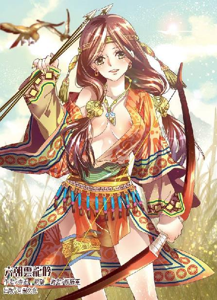

第45集·外姓追杀
太泉古阵篇（4/7）
出版日期：2013-05-03
【本集内容简介】
为掩护小紫和朱殷离去，程宗扬炸毁栖凤院的汤馆产业，一行人就此成为外姓人的眼中钉，不得不逃进太泉古阵，但众人也因此分散，失去联络……
独行的程宗扬在丛林里巧遇乐明珠，一番恩爱之后却惹恼了潘金莲，只能眼睁睁看着到手的小香瓜飞走了。
周族少主霸气四溢地渡过奈何桥，其手法看在程宗扬眼里满是震撼。难道周飞与他一样，都是穿越者？
※ ※ ※ ※ ※

封面人物：阿兰迦
光线穿过墙顶的透光孔，映在水雾弥漫的汤池上，幽暗的浴室内光影交错，色彩斑斓。
汤池旁的青石板上，摆着一只黝黑的铁笼。曾经光彩照人的奉琼仙子此时仿佛抽干了所有精力，就像一只陷入绝境的雌兽般伏在笼中。乌亮的秀发贴在肩上，湿淋淋滴着水，身上如火的红衣已经湿透，那张玉雕般的面孔混杂着困惑、惊恐与惶然，再也没有以往的矜持和骄傲。
铁笼旁立着七八个男子，穷年累月囚牢般的血腥生涯，给这些外姓人留下深深的烙印，他们狞笑地盯着笼中的猎物，目光中充满了阴狠和残忍的意味。
带着气泡的泉水在青石砌成的浴池中不住翻滚，散发出热腾腾的水雾，朱殷心头却一片冰冷。房门关上的刹那，她突然间意识到，刚才离开的菊姐，才是她此时唯一的依靠。在众多视线环绕下，她曾经的从容荡然无存。惧意像野草一样在心底滋生，使她禁不住微微发抖。
“难得老天爷开眼，挑中了仙子。”宋三开口说道，那笑容就像一个面具扣在脸上，眼中殊无笑意，“仙子这样的美人儿肯留在镇上陪我们兄弟，实在是大伙儿的福气。”
“嘿嘿……”
“呼呼……”
“哈哈……”
“呵呵……”
围观者发出一片怪笑。
朱殷苍白着脸一言不发，眼神却越来越绝望。反复凝炼真气之后，她终于确定，自己的修为已经所剩无几，宗门的刻意栽培，多年的勤修苦练，无数灵丹妙药，种种机缘……都成了过眼云烟。
宋三笑道：“莫爷的恩典，把朱仙子赏给大伙儿。咱们可别辜负了莫爷这番心意。”
有人嚷道：“三哥，时辰不等人，别让仙子等着！”
“急什么？”宋三道：“好菜不怕慢吃。”
铁笼“咣”的一声打开，宋三拍了拍笼子，“出来吧。”
朱殷身体颤了一下，接着闭上眼睛。
有人嘲笑道：“当初不肯进去，眼下不肯出来。仙子莫不是想住在里头？”
宋三淫笑道：“仙子是闻到了味儿，觉得这专门关母狗的笼子住着亲切——既然仙子不肯出来，咱们就关得更紧些！”
朱殷头上一痛，被人抓住发髻，把她头颈粗鲁地拖到笼外，接着宋三一推，两扇笼盖左右合紧，盖中两个半圆的铁槽正卡住她柔美的玉颈。
朱殷双膝跪在地上，两手攀住笼盖的铁栏，用力拉扯，可这只以往她轻易就能扯开的铁笼，此时却在她指间纹丝不动。
接着腰后一紧，有人用铁链把她纤腰束在铁笼底部，迫使她双腿分开，腰腹紧贴着大腿。
朱殷头颈被卡住，根本无法挣扎，只能木偶般任人摆布。等众人松开手，她已经被摆成跪伏的姿势，脖颈被铁笼卡住，腰肢低垂，浑圆的臀部被迫耸起。
宋三一手伸进笼内，在她臀上打了一把，啧啧赞道：“好个标致的屁股，大伙儿艳福不浅！”
朱殷双目紧闭，雕塑般的面孔白得几乎透明，温泉的热度渐渐散去，湿透的衣裙贴在身上，带来刺骨的寒意。
有人抱怨道：“咱们在外面辛辛苦苦，仙子在里面一个字儿都不说，连动都不动一下，这也太没味道了吧？”
有人应和道：“可不是嘛，知道的说仙子这是矜持，不知道还以为仙子看不上咱们这些兄弟呢。”
“这事儿得你来我往才得趣，仙子这样，那不是摆弄死人吗？”
众人鼓噪中，宋三道：“说的对！莫爷既然让仙子来服侍咱们，让她动着叫咱们快活才是正经的！仙子，是先给哥儿几个吹喇叭呢，还是让咱们先把肉棍别进去？”
朱殷紧紧咬着牙关，一声不响。
“不见棺材不掉泪啊。”宋三笑着说了一句，接着脸一沉，喝道：“把屏风打开！”
这间浴室依山而建，后墙就是山体，这时屏风被人拉开，露出一个洞口。那山洞并不大，不过半人高低，深度也只有丈许，然而洞内弥漫的却是一层白蒙蒙的雾气。
朱殷瞪大眼睛，身体无法抑制地战栗起来。当众人抬起铁笼，送入洞口，朱殷终于忍不住尖叫道：“不要——”
铁笼“砰”地落在地上，接着传来一片轰笑。
朱殷盯着眼前的白雾，呼吸变得急促而散乱，强烈的惧意使她几乎没听到周围的耻笑。她并不怕死，但对于她这样的修行者来说，每一点真元都无比珍贵，再没有什么酷刑比一点一滴耗尽真元更可怕，那种折磨完全超越了任何人的承受能力，再勇敢再有毅力的人也无法支撑。
宋三嘻笑道：“仙子，想明白了吗？”
朱殷想开口，舌头却仿佛僵住。
忽然铁笼向前一滑，在石上发出刺耳的摩擦声。朱殷失声道：“不！不要！我知道了！”
“既然想明白了，就先把衣服脱了，让大伙儿看看仙子的身子到底是什么模样？”
朱殷精致的唇瓣颤抖着，眼中露出受辱的凄然和哀婉。宋三抬脚往铁笼上一蹬，一缕雾气漫入笼内，沾在鼻尖上，寒意直入心底。朱殷尖声道：“我脱……我脱给你们看！”
众人喝道：“快脱！”
朱殷彻底崩溃下来，带着泣声乞求道：“求你们放开我，不要离这么近……我一定脱……你们想看哪里都可以……”
宋三一摆手，众人把铁笼拖出山洞，重新掩上屏风——即使他们，也同样不敢靠近那些雾障。
铁笼打开，失去支撑的朱殷仿佛被抽掉骨骼一样瘫软在地，浑身再没有一丝力气。
宋三抬起手，“嗒”的一声轻响，一颗指尖大小的黑色药丸掉在地上，接着是一颗红色的药丸，转动着滚到朱殷脸侧。
“黑的这颗是毒药，吞下去立刻就死。红的这颗可是好东西，”宋三笑道：“能祛寒压惊，延年益寿。仙子选哪颗？”
朱殷的骄傲被彻底打碎，她战栗着抬起手指，伸向那颗红色的药丸。
宋三拦住她，“这药不能用手拿，用嘴直接含住吞服才对。”
在雾障的威胁下，朱殷再没有任何反抗的念头，她伏下身，用唇瓣含住那颗红色的药丸。
宋三笑道：“先给仙子说清楚，这红色的药丸是催情的春药。若是选黑丸，一口吞下，一了百了。若是不想死，便选红丸，仙子初经人事，未免生涩，用这药助助兴倒是好的。”
朱殷僵滞片刻，最后闭上眼睛，费力地吞下那颗红色药丸。
周围传来一片嘲弄的笑声，“还以为这婊子真和天上的仙女一样，原来也是个要命不要脸的。”
“今就给仙子通通窍儿，死掉哪儿有活着好！”
宋三一手托起她白玉般的下巴，“啧啧”赞叹几声，然后抬手将她发上那支凤钗一把扯下。朱殷身体猛然一抖，接着发髻松开，长发披散下来。
宋三得意洋洋地拿起那支凤钗，展示给众人。虽然只是一支钗子，但在众人的轰笑声中，朱殷却感觉自己像是被人剥去最后一缕遮羞布，从高高在上的仙子堕入红尘。
忽然臀后一紧，有人抓住她的臀肉，朱殷身体本能地一颤，试图挣开。但看到宋三眼中充满残忍和快感的笑意，她身体仿佛被点中穴道一样变得僵硬。
宋三一手伸到朱殷臀后，手指顺着她的臀沟向下滑去。朱殷红裙已经浸透，湿淋淋贴在臀上。随着指尖的移动，红裙下的圆臀显露出优美的轮廓。那只手渐渐下移，一直伸到腹下那片软腻间。
朱殷身体像触电一样颤抖着，夹在臀沟间的红裙紧贴着肌肤，那根手指顶在臀下，能看到两片柔软的蜜肉微微张开，在湿透的布料下柔软地滑动着。
朱殷一颗心仿佛悬在喉咙里，身体微微痉挛。忽然腹内传来一股暖意，身体的战栗渐渐停止，朱殷苍白的双颊泛起一抹淡淡的红晕，雕塑般端妍的玉容变得妩媚起来……
浴室内一片寂静，除了水声，只有一丝细微的娇喘声。朱殷立在翻滚的温泉池边，在众人围观下微微低着头，一双洁白的玉手兰花般在颈侧翘动着，一点一点解开颈侧和腋下的衣纽，脱下那件鲜红的上衣，露出里面一件精致的纱衣，再往里，是一条贴身的抹胸。
朱殷解下上衣，垂手放在脚边。围观的众人像喝醉一样变得亢奋起来，叫嚷道：“把里面的也脱掉！”
朱殷低喘着，玉脸愈发娇红。她双手绕到颈后，解开系带，鲜红的丝绸抹胸水一般滑落下来，室内仿佛一亮，一对丰挺饱满的雪乳绽露出来，闪动着耀眼的肤光。
周围响起一片淫猥的笑声，“仙子这对奶子好生风骚……”
“好嫩的奶头，又鲜又红。”
宋三用指尖掐住她的乳头根部，将她乳头挤得向上翘起，笑道：“像不像樱桃？”
“好一对红鲜鲜的樱桃粒！”
围观的汉子纷纷伸出手，抚弄着她的雪乳。朱殷满脸飞红，却不敢挣扎，只羞耻万分地侧着脸，柔颈扭到一旁。
水晶般的光球内，光影不住变幻，程宗扬说不出是什么表情。这么新鲜的嫩白菜，不但被猪拱，而且还是被一群猪拱——说实话，自己倒真没有义愤填膺，反而有点血脉贲张的感觉。
水晶球内，被废去修为的仙子裸着上身，一双白美的雪乳被各种手掌轮流摸过，柔软而充满弹性的乳肉颤抖着不住变形。半晌，浴室内的外姓人才松开手，那个仙子般的美人儿含羞忍耻地解开红裙，在众人围观下褪去亵裤，一丝不挂地立在池边。
汤池中，朦胧的水雾不断升起，在众人喝令下，奉琼仙子仿佛一株雾中的白玉芍药，不断摆出各种姿势。她双手抱在脑后，右肘抬起，腰肢向左扭动，玉体呈现出一个优美的“Ｓ”型，曲线柔美动人。
接着她双掌合在一起，雪白的双臂从颈后向左倾斜，上身右横，一双玉腿微微弯曲，腰臀往左挺起，光洁的玉体像反弹琵琶的舞者一样拧成反“Ｚ”型，丰挺的双乳和浑圆的雪臀作为反“Ｚ”型的顶点，微微颤动，显得肉感十足。
朱殷在温泉中浸过多时，肌肤更显光润，曲线变幻间，妙态横生。那群外姓人一边抚弄着她白艳的胴体，一边戏弄道：“朱仙子真不愧是练过的，这屁股扭得真浪！”
“放到院里也是当红的粉头。”
“瑶池三仙子可都是上等的美人儿，”有人嘻笑道：“不知道哪个仙子奶子最大？朱仙子给咱们说说。”
朱殷低喘道：“大师姐……”
“看仙子这骚样，不会是开苞过的吧？”
“瞎说，瑶池宗的仙子可都是处子之身。是不是啊，朱仙子？”
朱殷道：“是……”
“是不是要验过再说。”宋三道：“朱仙子，把你的花苞露出来，让大伙儿瞧瞧是不是开过苞的。”
程宗扬道：“啧啧，朱仙子这下可是掉进狼窝了，还不如吞了那颗毒药呢。”
“大笨瓜，”小紫笑道：“黑色那颗也是春药，而且药力更猛烈。”
“干！只有你这种坏透了的死丫头才知道那些坏人的伎俩吧！”
小紫笑道：“程头儿，朱仙子美不美？”
程宗扬矜持地点点头，“还行。卓美人儿再年轻几岁，倒和她有一比。嘿，这帮人怎么干看不吃，只过眼瘾呢？”
光球中仿佛在上演着一台小小的舞台剧，那群外姓人带着狞恶的笑容围成一个圆圈，中间跪着一具白玉般的娇躯。朱仙子面带红晕地弯下腰，双手抱着那只雪白圆润的雪臀朝上抬起，在众目睽睽之下，扒开凝脂般滑腻的臀肉，露出股间那只鲜嫩的性器。
程宗扬眼睛一亮，“色如丹渥，穴若含珠——这是上等鼎炉啊！”
小紫却盯着朱殷颈中垂下的那块琥珀，唇角的笑意越来越浓。
朱殷心里对雾障的恐惧彻底压倒了尊严和矜持，她已经几乎感觉不到羞耻，就像条美丽的雌兽般跪伏在那群男人之间，柔颈贴在青石板上，雪滑的圆臀高高翘起，在他们的呵斥下主动扒开臀肉，将自己最羞耻的秘处展露在那些男人的视线下。柔艳的性器在臀间绽开，宛如一朵盛开的鲜花，绽露出娇美的蜜肉，红腻的穴口，柔嫩的花蒂，香艳无匹。
那群外姓人眼中几乎喷出火来，一名汉子按捺不住，低声道：“三哥？”
宋三摇了摇头，虽然莫爷仁义厚道，把奉琼仙子赏给大伙儿，但他心里明镜一样，奉琼仙子的苞只能莫爷来开，眼下这些其实只是调教，等大伙儿教好她规矩，服侍好莫爷才是正事。
原本不染凡尘的仙子此时身无寸缕，裸露着琼玉般的肉体，在人群中展示着自己最隐秘的羞处。在药物的刺激下，那只性器微微充血，就像一朵湿透的海棠，娇艳欲滴。
众人喉结齐齐动了一下，接着便有人忍不住伸手抓去——就在这时，所有人突然间神色大变。
屏风后传来一声低沉的响动，接着一股浓白的雾气从屏风下涌出，潮水般滚滚涌来，石室内温度剧降。
“雾障！”
室内所有人都变了脸色，眼看浓雾袭来，再悍不畏死的外姓人也心底生寒，不由分说便夺路而逃，争先恐后奔出门去，生怕沾上半点雾气。刹那间，汤馆内就只剩下朱殷一人，她已经认命地闭上眼睛，等待即将到来的命运，这时听到周围的响动，她迟疑地回过头，接着便被雾气吞没。
浓雾沾上皮肤，寒意侵体，本能的恐惧使朱殷浑身僵硬，她压抑不住地想要尖叫，喉头却仿佛被堵住，发不出一丝声音。
狂奔的脚步声从甬道远远传来，那些人一边跑一边呼叫，浓雾笼罩的石室转眼成为被诅咒者的绝地。
※ ※ ※ ※ ※
朱殷仍保持着原来的姿势伏在地上，神情间露出一丝茫然。浓雾沾在身上，带来刺骨的寒意，然而那种侵入血脉、消耗真元的噩梦并没有重现。
片刻后，一条纤美的身影踏雾而来，停在朱殷身旁。接着伸出一只白嫩的小手，挽住她颈下低垂的琥珀。朱殷怔了一下，下意识地急忙去夺，那只纤手轻轻一扯，拿走了那枚琥珀。
朱殷失声道：“还我！”
少女轻笑道：“好可惜，仙子一点法力都没有了，拿着琥珀也没用了呢。”
朱殷抬起头，映入眼帘的是一张精致无比的娇美面孔，雾色中宛如珠玉。
少女扬起手，笑道：“程头儿，你看人家的琥珀好不好？”
一个男子的身影出现在雾中，朱殷身体一颤，从刚才的噩梦中清醒过来，才发现这对男女却是在太泉古阵遇见过的。当时那场爆炸自己原以为这两人绝无幸免，没想到会在这里出现。心念急转间，朱殷突然意识到自己还赤身裸体，连忙抬手去掩。
小紫轻轻一笑，然后朝她摇了摇手，“再见啰。”接着叫上程宗扬，“程头儿，走喽。”
朱殷吃了一惊，急忙叫道：“等等！”
小紫停下脚步，一脸疑惑地说道：“仙子有什么事吗？”
在这个比自己还小许多的少女面前，朱殷竭力露出从容的表情，压下心底的惊惶，温言道：“那块琥珀便送给你……”
小紫打断她，“本来就是我的啊。”
朱殷怔了一下，一时间没明白这个少女的言辞，但这会儿那些外姓人随时可能返回，她顾不得多想，立刻道：“请你们帮帮忙，送我出去。”
小紫笑道：“人家没听清呢。”
朱殷叫道：“救救我！”
“救你吗？”小紫眨了眨眼睛，“你真想让我救吗？”
远处传来呼喊声，朱殷再顾不上矜持，急忙道：“求求你救我……”
“你确定吗？”
望着少女纯美的面孔，朱殷莫名地一阵心悸，她一咬牙，“是！救救我！”
小紫摊开双手，一脸无辜地说道：“程头儿，这可是她自己求我的哦。”
程宗扬听得直翻白眼，当初自己在古阵外面看到那些来寻仇的女子，就觉得她们出门都忘了看黄历，运气差到姥姥家了，居然赶上和死丫头一路。现在他敢肯定，朱殷出门铁定踩到狗屎了。身中诅咒、落入宋三等人的狼窝不说，居然还上赶着非要往死丫头的虎口里跳，这运气，真不是一般的凄惨。
“你带她走，我把他们引开。”
程宗扬说着推开屏风，一手伸进石洞，揪着雪雪的耳朵把那条使劲喷着冰雾的小贼狗扯了出来。雪雪凶猛地龇着牙，一副要和他拼命的架式，但被程宗扬拿刀背往头上一敲，立刻夹起尾巴，老实下来。
朱殷修为尽废，被小紫轻轻一扯，身不由己地跌了过去。石室上方开着透气孔，可供一人出入，刚才两人就是从这里进来。这时小紫带着朱殷离开，程宗扬则捡起地上的衣物，往外冲出。
如果只有小紫和自己两人，想脱身并非难事，那些外姓人虽然凶悍，但对雾障畏之如虎，只要往雾障里一钻，那些外姓人再胆大也不敢追来。不过带着同样受到诅咒的朱殷，沾上雾气只怕就成了死美人儿。只有先让小紫带朱殷离开，自己引走院中的外姓人，再想办法脱身。
程宗扬刚到门边，一脚还没踏出，就立刻退了回来。外面人影晃动，甬道两端都有人赶来。程宗扬暗叫糟糕，只晚了这么一步，形势逆转，院中的外姓人闻风而至，把出路已经堵住。
好在那些外姓人对雾障畏如蛇蝎，这会儿整个浴室都被寒雾笼罩，他们只远远守在门口，不敢靠近。
片刻后，有人沉声道：“眼下还是清晨，哪里就到涨雾的时候？”
“便是涨雾也没有涨得这般凶猛。”宋三道：“莫爷当心，雾气涨得蹊跷，不知是不是有什么变故？”
莫爷在外面道：“朱仙子呢？”
宋三左右看了看，“没见她逃出来，多半还在里边。”
有人掏出火褶，吹燃后抬手扔进室内。“哧”的一声，火褶刚飞出一半，就像被水泼到一样熄灭。
外面顿时一片哗然，“哪里是雾障？这是水雾。”
宋三一脸尴尬，自己一看到雾气便只顾着逃命，其实雾障微微有种蓝色，与平常的雾气仔细看时就能看出区别。
宋三道：“既然是水雾！莫非又多了一道泉眼？”
“你们仔细看看，若是多了泉眼，那最好不过。”说着莫爷扬声道：“镇上来了不少人，大伙儿提防些，这会儿都散了吧。”
外面众人散开，剩下宋三等人，虽然知道里面只是水雾，一时也不敢进来。争吵半晌，终于有人硬着头皮进入石室。
“咦？仙子呢？”
“不好！那贱人逃了！”
“快追！”
“别慌！”宋三道：“她能逃到哪儿去？仔细找！”
几人一片吵闹，将浴室翻了个底朝天，也没找到朱殷的影子。
程宗扬蹲着身，手里抱着朱殷的衣服，周围雾气弥漫。整个浴室只有一个藏身的地方，就是屏风后的洞穴。只不过洞中充满雾障，朱殷就算寻死，也不可能藏在里面，那些外姓人更不可能进来寻找。
程宗扬算算时间，小紫多半已经带着朱殷离开。只要等他们放弃搜索，自己就有机会逃之夭夭。
程宗扬小心往洞内挪了挪，忽然手边一滑，碰到一个圆滚滚的物体，程宗扬连忙伸手去扶，避免发出声响。这里已经是洞内深处，伸手都未必能看到五指，他小心摸索片刻，才发现那是一具已经化为白骨的尸骸。
程宗扬暗道晦气，不知道哪个倒霉的家伙来到苍澜，无声无息地死在洞内。他心头一动，转念想到，这人既然死在雾中，多半也是中了诅咒。能从太泉古阵出来的，都不是庸手，一般情况下，这种巧遇都会捡本武林秘籍什么的……
山洞并不太深，不过丈许就摸到尽头。程宗扬耐心摸了半天，可除了一堆白骨，连块破布都没捡到。
忽然“汪”的一声，程宗扬汗毛都竖了起来。那只小贱狗跟着自己一起钻到洞中，没想到这会儿好死不死地叫了起来。
外面有人叫道：“洞里有东西！”接着洞口“噼噼啪啪”一阵乱响，有人拿棍棒往洞内试探。
程宗扬一把揪住雪雪，把它往衣服里面一包，一边拔出雷射刀。
“呼”的一声，一杆短枪飞进洞中。程宗扬刚闪身避开，便看到一条铁链怒龙般挥来。这下避无可避，程宗扬只好挥刀挡住，顿时露了行藏。
“洞内有人！”
“什么人！滚出来！”
程宗扬一声不吭地拉过背包，把所有的手雷绑在一起，用朱殷的裙子包住，然后用力投了出去。
洞口红影一闪，众人的兵刃立刻招呼上去。接着轰然一声巨响，整个石室都仿佛被巨大的爆炸掀开，青石垒成的墙壁摇摇欲坠，半边房顶都倒塌下来，碎石带着硝烟四处飞溅。
不等爆炸声停，程宗扬就抱着雪雪闪身出来。这处汤馆紧邻着山体，程宗扬两个闪身，便钻进雾障。
※ ※ ※ ※ ※
一进雾障，就像在冰水中游泳一样，寒意刺骨。程宗扬不敢进入太深，只沿着雾障边缘小心行进。
对于小紫，自己并不担心，这边闹出这么大阵仗，她逃不出来才见鬼了。话说回来，那些外姓人虽然凶恶，但弱点实在太致命了，难怪在镇上如此低调，连徐君房都看不起他们。
一刻钟后，栖凤院已经被远远抛在身后。程宗扬打着哆嗦从雾障出来，钻进山林，然后一屁股坐在地上，“呼呼”地喘着粗气。即使没有中过诅咒，在雾中行走也是个体力活。等身上的寒意消退，他才揪着雪雪的耳朵把它扯出来，没好气地说道：“小贱狗，差点儿被你害死！”
雪雪懒洋洋地趴在地上，两只前爪搭在一起，不屑地翻了个白眼。
程宗扬一阵火大，揪着小贱狗的耳朵正要开骂，突然“咦”的一声，喝道：“嘴巴张开！”
雪雪头一扭，一副爱理不理的样子。
小贱狗嘴巴里明显咬着什么东西，可想从它嘴里夺出来，那后果实在太可怕了。看来只有死丫头才能制住这贱狗。
忽然雪雪抬起头，在空气中嗅了嗅，然后翘起尾巴，迈开四条小短腿，就像一只滚动的雪团，往林中奔去。
不多时，林中传来一阵兵刃交击的声音。程宗扬小心看去，却是两帮人马正在恶斗，一方是五名大汉，另一方则是一老一少两人。那几名汉子包着头，面目凶狞，看上去像一伙悍匪，为首的却是一个面目清秀的年轻人，他不住出声指挥众人走位，将两人牢牢困住。
此时老少两人已经落在下风，那老者挥舞着一根铁杖，面目依稀有些眼熟，却是百琴谷的长老。
程宗扬看了几眼，不禁讶异，那群汉子修为不见得高明，一对一的话，未必能在百琴谷长老手下走过几招，但在那年轻人的布置下，隐隐结成阵势，完全压制住对手的攻势。
百琴谷长老身边的少年修为平平，勉强支撑片刻，对面的年轻人忽然长剑一挑，使了个虚招，接着错身上前，挥拳将他打翻在地，长剑一沉，架在他颈中。
那年轻人喝道：“把通仙草交出来，放你们一条生路！”
百琴谷长老神情惨淡地跳开一步，取出一支竹筒丢在地上，哑声道：“老夫认栽！通仙草在此，放开他吧。”
一名汉子抄起竹筒，拔下塞子，抬掌轻轻一磕，取出一株通体莹白的细草，然后递给为首的年轻人。
那年轻人仔细看了片刻，然后笑道：“老头儿，你们运气不错啊。这趟进太泉古阵，是不是还捞到了别的宝贝？”
百琴谷长老惨然道：“老夫在阵中五日，折损一名弟子，费尽心机才得到这株仙草，哪里还见到别的宝物。”
“真没有吗？”
百琴谷长老摇了摇头。
年轻人遗憾地叹了口气，长剑蓦然一递，刺穿了那少年的脖颈。百琴谷长老大叫着朝前扑去，几人刀剑齐出，转眼将他格杀当场。
几人拿过两人的行囊翻拣，忽然有人扭头道：“哪儿来的狗？”
程宗扬眼看着小贱狗撒着欢跑到一棵树下，然后兴奋地扬起一只小爪子，在空气中挠着。
空气像水面一样荡起涟漪，片刻后发出一声肥皂泡破开般的轻响，原本空无一物的视野，仿佛扯下幕布般景物变幻，露出一张姣美的面容。
小紫生气地看着雪雪，“小笨狗，外面有坏人呢，你就要进来。”
雪雪跳到小紫怀中，亲怩地在她身上蹭着，然后张开嘴，把一个小小的东西吐在她掌心。
那群汉子都没想到有人居然藏在自己眼皮底下，不由瞠目结舌。为首的年轻人目光落在小紫身后那女子身上，然后挤出一个笑容，“莫非是瑶池宗的奉琼仙子？好法术！佩服！佩服！”
朱殷原本身无寸缕，临走时虽然匆忙捡了件外衣，这会儿披在身上，却掩不住她胴体凸凹有致的曲线，反而更添诱惑。她玉颊酡红，流露出醉人的风情，一边还竭力保持着从容的气度，淡淡道：“看诸位用的阵法，多半是太乙真宗的道兄吧？”
几名汉子互相看了一眼，为首的年轻人眼中寒光微闪，接着哈哈笑道：“果然瞒不过仙子的法眼！在下童行海！幸会幸会！”
童行海嘴上说着幸会，手里却握紧剑柄。他们掩藏身份杀人越货，这时被朱殷一口揭穿，便知道此事绝难善了，心下顿生杀机。童行海使了个眼色，手下几人四面散开，拦住两女的去路。
小紫点着雪雪的鼻子嗔道：“小笨狗，看你干的好事，这下要被人杀人灭口了呢。”
童行海等人并没有把那小姑娘放在心上，全部心神都用来戒备朱殷。瑶池三仙子名声在外，任谁也不敢掉以轻心。尤其是她刚才施展的手段，一个匿形术，众人近在咫尺都未能察觉，不由他们不防。
“外面传得沸沸扬扬，都说仙子得了一颗赤阳圣果，”童行海满脸堆笑地说道：“恭喜恭喜。”
朱殷镇定地说道：“赤阳圣果不在我手中。”
童行海笑道：“我猜也是，赤阳圣果那种宝贝，自然要藏起来才是——”
话音未落，童行海蓦然腾身掠起，长剑在空中挽了一串绚丽的剑花，星星点点朝朱殷洒去。
朱殷根本就是外强中干，只能勉强维持平常的风度。童行海全无征兆地一剑袭来，她甚至来不及反应，就被剑光笼罩。
剑至中途，童行海心下起疑，右手突然一翻，收回长剑，接着左掌递出，一把卡住朱殷的喉咙。
童行海压根儿没想到堂堂奉琼仙子会被自己一招制住，他微微一怔，接着露出狂喜的表情，已经察觉到朱殷修为尽废。
忽然身后涌来一股杀气，童行海脚尖一点，滴溜溜转过身，长剑横在身前，守住门户。刀剑相交，童行海丹田一滞，居然吃了些暗亏。
程宗扬收刀贴在肘后，然后侧过身，屈臂劈出。武二郎的五虎断门刀以气势见长，双刀霍霍，气势惊人，这一招却是贴身短打的功夫，依靠身法和步法的配合，用全身的力气近距离出刀，力道十足。
交手不过三招，童行海的长剑便被他撞开，接着程宗扬欺身近前，刀锋从肘下挑出，虎牙般袭向童行海的胸腹。
童行海退后一步，长剑一旋一翻，缠住程宗扬的雷射刀，用上柔劲，与对手比拼内力。
另外几人原本四处散开，见状纷纷赶来，谁知童行海比拼内力落败更快，略一交手，便“哇”地吐出一口鲜血，踉跄着退开。
“师兄！”几人急忙扶住他。
童行海挥手推开众人，一边啐了口血沫，两眼紧盯着程宗扬，沉声道：“你是本宗哪一支的弟子？”
程宗扬微笑道：“我是太乙真宗的掌教。”
“蔺采泉的人？”童行海神色数变，最后喝道：“我们走！”
“蔺采泉的人又怎么样？”一名汉子道：“杀了他！”
童行海劈手给了他一记耳光，“本是同门！哪里便要打打杀杀？走！”
童行海虽然年轻，那些门人却丝毫不敢违抗，几人连句场面话都没留，便掠往林中。
程宗扬与朱殷对视一眼，这位奉琼仙子露出一丝慌乱和惊恐，随即又恢复那种凛然的神情，从容拂了拂发丝。
程宗扬对小紫道：“你们怎么藏在这里？离栖凤院太近了。”
“大笨瓜。”
朱殷道：“姑娘担心公子，特意在这里等的。”
程宗扬心头一暖，正要开口，忽然身后传来一声令人毛骨悚然的惨叫。刚才离开的一名太乙真宗门人跌跌撞撞奔了回来，他从头到脚都被火焰包围，烧得火球一般，没跑几步便颓然倒地，气绝身亡。
童行海等人倒退着从林中出来，戒备地看着周围。
“啪，啪……”
林中传来鼓掌声，一名中年人漫步出来，抚掌赞道：“好一个金火天丁大法！”
对面现出一名黄冠道人，他稽首行礼，然后客气地说道：“怎比得了贵宗的离火神符？”
“柳道友不必客气。”尹思元笑道：“我道宗六大宗门，华妙宗早已除名，不必多说，如今论及道家诸宗翘楚，谁不知神霄宗后来居上，已经是道宗数得上的名门？六大宗门，必有贵宗一席之地。”
“岂敢岂敢，敝宗虽然薄有虚名，但根基尚浅，怎能与乾贞道相提并论？”
两人谈笑自若，全未把童行海等人放在眼里。童行海神情数变，然后停住脚步，扬声道：“在下太乙真宗童行海！不知两位道兄有何见教？”
尹思元对柳淳风道：“如今江湖鱼龙混杂，泥沙俱下。光天化日之下，居然有人行凶劫掠，还冒充名门正宗。柳道友，你说蹊跷不蹊跷？”
柳淳风道：“世道浇离，人心不古，如此胆大妄为之徒，岂能容他猖狂？”
童行海清秀的面孔蒙上一层寒霜，冷冷道：“童某是林之澜林教御门下。今日之事，乃是敝宗的通仙草被人抢夺，在下取回而已。”
尹思元这才回头看来，“真的假不了，假的真不了。阁下是不是太乙真宗门下，只需随尹某前往龙池，便知真伪。”
看到乾贞道并非要翻脸，童行海暗暗松了口气，连忙道：“不错！柳道长若是不信，咱们便去龙池分说清楚！”
“好。”尹思元点了点头，然后道：“拿下！”
童行海又惊又怒，“尹道长！你这是何意！”
尹思元笑道：“此去龙池数千里之遥，道兄若是跑了，还如何分说清楚？少不得我乾贞道多担待些，护送各位回去。”
童行海心里明镜一般，这尹思元嘴上说得好听，一旦落到他们手中，自己生死都是他一句话的事，别说活着回到龙池，就是活着离开苍澜镇都是幻想。
接着两名乾贞道门人从后面现出身来，虽然人数不多，却摆出包围的架式，似乎要将童行海等人一网打尽。
童行海猜的没错，尹思元早在太泉古阵就盯上他们，见这些太乙真宗的门下鬼鬼祟祟掩饰身份，便打定主意要黑吃黑，因为担心手上实力不足，还拉来神霄宗作帮手——乾贞道在宋国颇有些势力，与神霄宗关系一向良好，而神霄宗对太乙真宗重返宋国极为忌惮，眼下有机会对付太乙真宗，双方顿时一拍即合。
林中剑光闪动，双方已经动起手来。乾贞道与神霄宗的四人修为比太乙真宗诸人高出一截，其中还有尹思元和柳淳风两个高手。不到一刻钟，太乙真宗三名门人便血溅当场，最后童行海被尹思元一掌拍在背心，扑倒在地。
尹思元没有趁机取他性命，反而收手道：“道友今次来太泉古阵不知是何用意？大伙儿既然都是道宗一脉，只要道友分说明白，自然会放道友一条生路。”
童行海明知道他是拿自己当初的话来戏耍，但生死关头，便是一根稻草也要紧紧捞住，当下竹筒倒豆子一样，说了来意。
童行海是在洛都附近听到消息，当时他正与几位同门扮作汉国游侠，寻机劫掠过往行商。听说武穆王近日在太泉古阵出现，他立即派人向师尊林之澜传讯，一边启程南下。但他们进入太泉古阵时运气却差了点儿，被传送到第一层，用了两天时间才赶到第三层，结果连奈何桥都没能过去。
折腾数日，第一批越过奈何桥的人陆续出来，童行海眼看要空手而归，偶然发现百琴谷长老得到一株通仙草，便动心抢夺，谁知螳螂捕蝉、黄雀在后，最后落在乾贞道手里。
尹思元道：“太乙真宗堂堂名门正道，怎么也干起劫路的勾当？”
童行海辩解道：“实非如此。前任王掌教多年领兵在外，用的都是我太乙真宗的积蓄。又与宋国闹僵，失了宋国的财源，敝宗十来年坐吃山空，早已入不敷出。我等换了身份，为的是行商方便，从不敢为非作歹。”
尹思元恍然道：“原来如此。那童道友赶来太泉古阵，想必是为了与岳贼联手起事吧？”
童行海连忙道：“绝无此意！敝宗与岳贼毫无瓜葛。实言相告，对王掌教的作为，敝宗上下也多有不满。”
“千万别这么说。”尹思元显然心情很好，笑道：“多亏了紫阳真人，神霄宗和我乾贞道才能在宋国多分一杯羹。柳道兄，你说是不是？”
柳淳风微微一笑。童行海被他们揶揄得脸色时青时白，一时说不出话来。
尹思元笑道：“童道兄，此去龙池，一路走好。”说着一掌拍出。
童行海原本背靠着大树，这时猛地怪啸一声，双掌拍向两人。
柳淳风冷笑着抬起掌，与尹思元各抵住他一只手掌，接着真气奔涌而出。童行海怪啸不绝，竟然撑住两人联手的攻势。突然间，他胸口衣物破开，从胸腹处伸出一只怪异的兽爪，狠狠抓在尹思元肋下。
尹思元只觉肋下剧痛，被他一爪震断两根肋骨，又生生撕下一片肉来，鲜血顿时染红道袍。
童行海破开两人联手之势，随即纵身出来。另外两名乾贞道的高手正盯着程宗扬等人，听到异动连忙转身，便看到一只兽爪劈面袭来，接着面门剧痛。
童行海陡然加速，顷刻间，乾贞道一名高手便已重伤，另一名乾贞道高手慌忙后退，却被一根树枝绊倒，跌坐在地。童行海妖魔般扑过来，双手按住他的手臂，胸腹间那只兽爪抓住他的下巴，往上一推，然后张口咬住他的脖颈。
不知何时，林中的光线黯淡下来，天际乌云密布，那名乾贞道高手被咬断喉咙，鲜血泉水一样喷出，溅在童行海脸上。
“噗”的一声，一截剑锋从童行海胸前钻出。尹思元一手按着肋下的伤口，一手握着长剑，用力一拧，绞碎童行海的心脉，然后拔出长剑，将他拦腰斩断。
柳淳风震惊地望着童行海的尸身，半晌僵硬地抬起头，脸上已经面无人色，颤声道：“兽鬼……太乙真宗门下，怎么会有兽鬼……”
尹思元咬牙道：“灭口！”
“呃？”柳淳风一时没有明白过来。
尹思元只说了三个字：“林之澜！”
柳淳风明白过来，如果单单是杀了太乙真宗的人，即使走漏风声，也可以说是误会，甚至倒打一耙。可林之澜门下居然身怀兽鬼异术，传扬出去，林之澜无论如何也要杀自己二人灭口。
尹思元道：“那个小美人儿是柳兄的。剩下的我来对付。”
柳淳风一点头，挺剑朝小紫刺去。小紫惊叫一声，转身就逃。程宗扬拔刀而起，细长的刀身闪电般袭向柳淳风后颈。
忽然手上一沉，刀势顿减。程宗扬凝目看去，刀锋上不知何时多了一张黑色的小符。那符箓只有两指宽窄，上面绘着弯弯曲曲的符文。
朱殷修为虽然被废，眼光还在，连忙提醒道：“这是乾贞道的重岩符，可令兵刃重量剧增，符箓消失前只能弃刀。”
当初在野猪林，程宗扬就见识过乾贞道的符箓，眼前这张重岩符显然技高一筹，原本轻若无物的雷射刀突然间仿佛重逾千斤，拿在手中都摇摇欲堕，更不用说出招破敌。
“仙子倒有几分眼力，可惜我这重岩符多了锁魂的符文，除非把手砍断，便是想弃刀也弃之不去。”
尹思元强行压下伤势，冷笑着屈弹一指，打出一张坎冰符。谁知那年轻人长刀忽然一震，刀身化为流光，消散无痕，重岩符失去依托，轻飘飘落在地上。
错愕间，程宗扬仅剩的刀柄蓦然射出一道电光，将坎冰符斩成两半，接着挑向尹思元的胸口。尹思元顾不得理会他长刀的变化，双掌一合，胸前蓦然飞出一柄短剑，迎向吞吐的电光。
朱殷道：“乾贞道的护命法剑！避开！”
那年轻人非但不避，反而举刀迎向他的法剑。尹思元心下冷笑，避开虽是上招，但自己的护命法剑剑随心动，这年轻人身手再快，又岂能快过自己的心意？至于硬挡，等他长刀飞出，魂魄受创，便知道自己法剑的厉害。
尹思元祭出法剑，满拟将他那柄怪异的长刀震飞，趁势斩断他的喉咙。没想到他的法剑刚一飞出，就被电光斩成两截。
尹思元如受雷殛，脸色瞬间变得惨白。程宗扬猱身上前，刀上电光吞吐，朝尹思元拦腰斩去。
尹思元法剑被毁，口鼻眼角都渗出血痕，状如疯魔。他左掌摊开，一口鲜血喷在掌心，厉声道：“琉璃血界！”
鲜血在尹思元掌心凝出一道血红的符箓，接着飞出，将程宗扬笼罩在一片琉璃般的血光之中。
乾贞道的琉璃血界是以元神精血凝成符箓，一旦被符箓击中，就会被困在一个琉璃般的血色天地中，难以脱身。
尹思元制服程宗扬，随即盯向朱殷，森然道：“朱仙子这么好心情，居然和太乙真宗的人联手。”
朱殷转身便跑，忽然腿上一软，跌倒在地。
柳淳风与小紫一个追一个逃，已经不知去向，林间血迹斑斑，伏尸处处，寒风拂过，顿时阴风四起。
朱殷穴道被封，手脚软绵绵使不出半点力气，单薄的衣物下，显露出肉体柔美的曲线。尹思元舔了舔发干的嘴唇，瑶池宗奉琼仙子是道门有名的美女，今日之事左右要杀她灭口，不如先快活一番。
尹思元半边身体都被鲜血染红，眼中却流露出野兽般的光芒，狞声道：“都说奉琼仙子是琼玉做的身子，今日尹某倒要好好观瞧一番……”
“好生白嫩的肌肤，果然如脂如玉……”尹思元肋下被妖爪撕开的伤口边缘变得乌黑，自己却毫无所觉，他手掌伸进朱殷衣内一摸，不由怪笑道：“仙子竟然连内衣都没有穿？”
朱殷神情惨然，一边想就此死去，一了百了，又禁不住想开口哀求，求他饶过自己性命。
尹思元狞然一笑，抬手将她衣物撕得粉碎，露出她雪玉般的胴体，接着两手抓住她双腿用力分开。朱殷唇瓣颤抖着，敞开的双腿间湿淋淋传来一片寒意。尹思元咧开嘴，露出一条已经发黑的舌头，自己却毫无所觉。他舔了舔嘴唇，忽然扑下身，把脸埋在朱殷腿间，舔弄得叽叽作响。朱殷身体触电般不住战栗，玉颊红得仿佛要滴出血来。
忽然，一柄长刀出现在尹思元背后，接着笔直落下，从尹思元颈后刺入，穿过胸腔、腹腔，从腹侧伸出，将他整个钉在地上。
程宗扬仿佛从血池中爬出来一样，浑身浴血。他用力一拧刀柄，然后拔出雷射刀，把尸体踢到一边。
朱殷没想到他居然连琉璃血界也能劈开，错愕之余，心底不由涌起一股强烈的感激之情。她头一次发现这个年轻人如此亲切，虽然他满身血污，看上去凶狞无比，但比起道貌岸然的尹思元，却纯洁得如同天使，尤其是他在遍地尸骸间挺立的姿态，让朱殷几乎要喜极而泣。
忽然那年轻人一手捂住小腹，脸上露出痛楚的神情，朱殷张口欲问，却见他劈手抓住自己的长发，把自己扯起来。朱殷惊恐地瞪大眼睛，看着他一手解开裤子，掏出怒胀的阳具，用力贯入自己口中。
朱殷口腔被火热的阳物塞满，怒胀的棒身一直顶到喉头，又粗又硬，使自己几乎无法呼吸。
年轻人一声断喝：“舔！”
朱殷浑身一颤，红唇含住肉棒，勉强用舌尖舔舐起来，心里刚才那点感激顿时化为乌有。
※ ※ ※ ※ ※
程宗扬半跪在地上，瑶池宗的奉琼仙子伏着白如琼玉的身子，艳丽的面孔以一个紧密无间的姿势贴在他腹下，红唇圆张着，含住阳具根部微微蠕动。程宗扬反手把雷射刀插在身旁，双手伸到朱殷臀后，扒住她雪滑的臀肉。
朱殷以一个顺从的姿势跪伏在那年轻人胯下，鼻端充满他身上的雄性气息，她能感觉到自己柔嫩的玉户在臀间绽露出来，湿溚溚的蜜肉暴露在空气中，传来阵阵凉意。接着他指尖伸进自己最敏感的部位，在臀间那朵敞开的鲜花间肆意挑弄，每次碰触都带来令人难以控制的战栗感。朱殷情不自禁地扭动身体，试图摆脱他的手指。
“别动……”程宗扬低喘道：“有毒。”
朱殷想起尹思元发黑的伤口和他怪异的举止，顿时明白过来。尹思元被童行海胸前的兽爪抓伤，已经中了毒，刚才他趴在自己下身舔弄，带毒的唾液也随之进入自己体内。
朱殷不再挣动，她一边仰着脸吮吸他的阳物，一边翘起雪臀，任由他摸弄着自己最羞耻的部位，心底的感激却渐渐滋生。
朱殷下体在春药刺激下已经一片湿泞，程宗扬对房中术的钻研虽然还不够深入，但应付她这样一个处子已经绰绰有余。不多时，朱殷便玉体剧颤，蜜穴抽动着，在他指上泄了身子。
程宗扬呼了口气，在她耳边道：“还好，你下面很紧，他的口水没进去。”
朱殷从来没想过自己听到这样淫猥的话语，居然不是生出遭受羞辱的愤怒，而是喜悦。她脸上掠过一丝羞窘，轻轻“嗯”了一声，然后垂下眼，含住唇间的阳具，细致温存地吞吐起来。
一个紫色的身影流云般飘来，轻盈地落在一根树枝上。小紫翘起唇角，含笑嗔道：“好啊，大笨瓜，你不去救人家，还在这里干坏事。”
朱殷柔滑的舌尖僵了一下，然后把火热的面孔埋贴在程宗扬腹下。
程宗扬扯了扯唇角，露出一个苦笑。
小紫颦起眉头，“很多吗？”
“并不是太多。”程宗扬道：“但那个很古怪。”
“王处仲？”
程宗扬点了点头，又摇了摇头，“有点像，但不太一样。”
朱殷没有听到他们的交谈，即使听到也不明白对话的意思。程宗扬和小紫彼此却是心知肚明。
林中近乎屠杀的一场恶斗已经结束，除了他们三人以外，无人幸存，现场留下超过十具尸体。程宗扬从雾障脱身，真气已经消耗大半，生死根几乎是饥渴地吸收死气，丹田运转中，逐一去芜存精，将芜杂的气息排斥出来。这些程宗扬本来已经习以为常，但童行海被杀时溢出的死气不仅杂乱不堪，居然还带有毒素，让他大出意外。
程宗扬借助吸收的死气破开琉璃血界，体内积蓄的芜杂气息已经到了崩溃边缘，因此一干掉尹思元，他就迫不急待地拉起朱殷。如果换作别人，也许直接就将朱殷破体。朱殷修为已废，再加上尹思元唾液中也有毒素，破体之后只怕便要香消玉殒。好歹程宗扬还有点人性，只用朱殷唇舌服侍，又帮她清理掉被尹思元感染的毒液。
朱殷并不知道其间的详情，但被他粗暴地插入口腔之后，居然还能感受到他的善意，不能不说是一种很奇特的体验。尤其自己还在他手中泄身，被他亲眼看到自己高潮的羞态，更让朱殷有种异样的感觉。自己与这个年轻人之间，不到一个时辰之前还是陌生人，现在已经突破亲密的界限，比如他身体的一部分，此时还在自己口中。
作为瑶池宗的奉琼仙子，朱殷从未想过自己会和一个凡俗女子一样，与男子做出亲密举止。更不说像现在这样母狗般趴在男人身下，吸吮对方的阳物。落在宋三手里时，她曾做过最坏的打算，心底充满了恐惧和屈辱，然而现在，自己即使不是心甘情愿，也没有强烈的意愿去反抗，甚至还能更加温存——假如旁边不是还有一双眼睛的话。
小紫戏谑的眼神，使朱殷感到无法抑制的羞耻，她想表示自己仍是瑶池宗贞洁自持的奉琼仙子，眼下的举动仅仅是报恩。她一边安慰自己，一边呼吸着鼻端浓郁的雄性气息，心头渐渐迷乱。
忽然男子低吼一声，一手按住她后脑，阳具跳动着，在她口中喷射起来。
怒胀的阳具在唇间一点一点软化下来，齿间和舌上浓浓的，满是黏稠的液体。阳具从唇间滑出，几滴液体溅在下巴上。朱殷抿着红唇，一手掩着嘴巴，羞赧地侧过脸，接着听到少女轻笑的声音：“吞下去，肚子就不冷了。”
朱殷犹豫了一下，分三口将那股浓精吞了下去。片刻后，已经枯竭的丹田果然升起一丝暖意。虽然很淡，却仿佛沙漠中一滴甘霖。
朱殷低声道：“多谢两位援手之德。”
小紫笑吟吟看着她，然后道：“你想走吗？”
朱殷勉强露出一丝笑容，“奴家想请两位帮忙向宗门传讯，无论是奴家还是瑶池宗，都必有重谢。”
小紫笑道：“可以啊。只不过人家有比口信更好的主意呢。”
说着小紫打开摄像机，调出汤馆中那段影像。
看着光球中的影像，朱殷脸色顿时变得惨白，她原以为两人并不知情，这时才知道，他们不仅仅是知情而已。
小紫眨了眨眼睛，“这么清楚，瑶池宗肯定会重谢我呢。”
朱殷闭上嘴巴，这段影像如果被人看到，不仅自己颜面无存、身败名裂，连宗门也会被连累得受尽嘲笑。堂堂瑶池宗奉琼仙子，竟然在一帮地痞的威胁下宽衣解带、耻态毕露，这样的丑闻足以让瑶池宗翻不过身来。尤其是自己在对话中提到师友，到时连她们也会成为世人的笑柄。如果是自己的师姐妹落到同样的境地，恐怕自己先想到的也是杀之而后快。
小紫用遗憾的口气道：“程头儿，好可惜，朱仙子不肯当人家的奴婢呢。”
程宗扬道：“好啦，别捉弄她了。”
小紫娇笑着打了个响指，“正确！程头儿做好人，坏人让人家来做。”
“喂，我可不是跟你演红脸白脸啊！”
“本来就是嘛。”小紫笑道：“你要不肯，那人家红脸白脸都演好了。”
小紫叉着腰对朱殷道：“听好了。我是你紫妈妈，如果不喜欢跟着我呢，你就自己走好了。”
朱殷仅剩的衣衫被尹思元撕碎，这会儿身无寸缕，而且修为尽废，随便遇到生人，下场便可想而知，闻言脸上时红时白，作声不得。
程宗扬打断她，“那些外姓人吃了大亏，肯定会要报复。我估计徐君房那边也不安全，赶紧想办法先躲躲，藏好了你再玩。”
“想藏起来吗？很简单啊。”
“是吗？”程宗扬一脸怀疑地说道：“苍澜就这么大，那些外姓人就是把地都刨一遍也用不了多少时间。如果是穿过雾障逃出去，你能带着她走吗？”
“还有一个地方呢。”小紫道：“太泉古阵。”
程宗扬木着脸，半晌才道：“干！”
※ ※ ※ ※ ※
“太泉古阵？”萧遥逸道：“这会儿就去？出了什么事？”
程宗扬道：“可能有点小麻烦。”
“什么麻烦？”萧遥逸一边飞快地收拾行李，一边埋怨道：“圣人兄，你又捅什么漏子了？你可是和紫姑娘在一起的，千万别带着她冒险啊，你有个三长两短不要紧，紫姑娘要是出什么岔子，我只有抹脖子了。”
程宗扬一肚子的腹诽，自己纯粹是被紫丫头带着冒险的好不好？
“放心吧，她找了个好地方，这会儿安全得很。”
“你还没说什么麻烦呢。”萧遥逸想起来，“栖凤院方才的爆炸不会是你干的吧？”
“猜对了。”程宗扬道：“这地方恐怕不安全，赶紧换个地方。”
“苍澜镇就这么大，能换到哪儿？”
程宗扬反问道：“还能是哪儿？”
“太泉古阵没到开启的时候啊。”
程宗扬道：“所以要先找个地方避避，等太泉古阵一开，咱们就进去。武二呢？”
“去找凉州盟的人了。”
“白仙儿？”程宗扬想起武二手里那个行货，“那就凉州盟，先到他们的地盘上躲躲。”
“你呢？”
“我去找紫丫头。”程宗扬一边背起铁箱，一边道：“照顾好老徐，情形不对就赶紧溜。”
“程兄，你忘了个人吧？”
“谁？”
“朱老头啊。”
“死老头还在挺尸？”
“可不是嘛。就早上吃饭的时候溜出来一趟，一抹嘴就又钻他窝里了。”
程宗扬没好气地说道：“你告诉他，中午饭去凉州盟吃。有肉！去得晚就没了。”
萧遥逸抚掌道：“这主意好！”
程宗扬把染血的衣物收起来，然后换上帆布牛仔服，用头巾包住嘴巴，只露出一双眼睛，贴着墙根往背巷掠去。
※ ※ ※ ※ ※
程宗扬弯着腰，小心不撞到楼板，木梯在脚下发出“吱呀吱呀”的声响，似乎随时都会散架。
好不容易钻进阁楼，程宗扬放下铁箱，然后坐在上面。说是阁楼，这高度连站着都勉强，本来就不大的空间堆满了乱七八糟的物品——据说都是太泉古阵出土的宝物，但以程宗扬的目光来看，恐怕一大半都是徐大忽悠的手艺。
小紫侧身坐在地板上，面前的水晶球光线不住变幻，隐隐能听到里面传来的声音：“……便真是天上的仙女下凡，到了苍澜也要按我们的规矩来！”
话音戛然而止，接着光线黯淡下来。
能录下宋三与那位莫爷的交谈，纯粹是意外收获。这段影像程宗扬也看过两遍，有些遗憾地说道：“可惜只看到个后脑勺。”
小紫嫣然一笑，重新按下播放键，然后将光球转了个角度。程宗扬拍了拍脑袋，自己习惯性地把它当成平面影像，忘了这其实是一台立体摄像机。
光球中，那位莫爷的相貌呼之欲出，却是一个满脸酒色之气的中年人，虽然微微有些发福，但眉目疏朗，比起宋三的奸滑、其他外姓人的凶残，倒像是个富态的富家翁。
程宗扬摸着下巴道：“徐掌柜说外姓人的首脑是栖凤院的东家，水果行的会首。看样子，这位莫爷八成是栖凤院的东家。不知道水果行的会首又是哪个？”
小紫轻笑道：“我猜两个都是他。”
程宗扬琢磨了一下，然后一拍大腿，“这个徐大忽悠！好端端地说话，用什么修辞手法啊？我还以为是两个人呢！”
“这个人好像很厉害呢。”
“能让那些活着跟坐牢一样的外姓人服服贴贴，肯定有几下子。”程宗扬看了一会儿，皱眉道：“好像不是什么高手啊？”
随着修为的提升，程宗扬的眼力也水涨船高，那位莫爷坐在汤池里说话还不明显，但他起身时脚步虚浮，倒像是酒色过度的模样。
光球中，那位莫爷道：“剑霄门前任门主死在武穆王手上，前来寻仇还说得过去。洛帮的何大当家当年和武穆王算是你情我愿，如今也来落井下石？青叶教的尹夫人前前后后更是得了不少好处，说翻脸就翻脸，果然是婊子无情。”
程宗扬看了小紫一眼，“他对岳帅的事好像挺熟？”
小紫笑道：“最了解你的人，肯定是你的敌人。”
“得，又是仇家。”程宗扬脑中一闪，“说不定他就是追着姓岳的才在苍澜落户的！”
小紫转了转眼睛，“有可能哦。”
接下来的影像并没有太多波澜，小紫已经看过几遍，没有兴趣再看。程宗扬接过来，随手摆弄着摄像机。不多时，宋三与莫爷对话的视频结束，接着亮起的画面，是一个囚在铁笼中的红衣女子。
程宗扬禁不住扭头朝朱殷看去，她原本的衣物都已撕碎，不得不从死尸上扒了件男装勉强遮体。反而别有一番风情。
程宗扬笑道：“仙子，一块儿来看吧。”
朱殷玉颊泛起淡淡的红晕，顺从地过来依偎在他怀中。看着影像中自己受辱的耻态，她不禁羞得无地自容。从旁观者的角度，朱殷才发现自己以前的骄傲和自负有多脆弱，当身份地位和修为都不足以成为依仗，自己的表现甚至还不如一个寻常女子。
忽然胸前一紧，一只手掌伸进衣内，握住她丰满的乳房。朱殷本能地想要避开，但看到影像中自己裸着双乳让那些地痞一般的恶棍肆意揉弄的画面，她再没有脸面去故作矜持。连那些恶棍都摸得，如今被他把玩，自己应该感到庆幸吧。
接着画面转到自己最羞耻的一幕，此时看到，朱殷仍羞窘的浑身发颤。她简直不敢相信，那个比娼妓还要下贱的女子竟然是自己。
小紫的轻笑声传来，“程头儿，你来看。”
这处阁楼连窗户都没有，不过建筑粗劣的做工很好地弥补了这一点。用木板拼成的墙壁虽然用泥抹过，但年深日久，不少地方已经剥落，透过板壁的缝隙，很容易便能看到下面的巷道。
这是一条背巷，和苍澜镇上其他街道一样，完全没有任何规划的巷道弯弯曲曲，杂乱不堪。引人注目的则是巷内一群花枝招展的女子，她们衣着暴露地坐在高高的木凳上，对着来往的客人搔首弄姿，售卖采来的水果。
阁楼位于背巷中段，几乎就在那些水果妹头顶，从程宗扬的角度正好能看到下面一个艳丽的身影。
那丽人身上只有一条松松垮垮的肚兜，白花花的肌肤大半裸露在外。她坐在半人高的木凳上，一双玉腿并在一处，双手放在膝上，腰背挺得笔直。巷内不见阳光，她木凳旁却放着一只大大的斗笠。身边一个女子不时出言指点，让她保持挺胸抬头的姿势，面带笑容。
程宗扬啧啧道：“这么快就卖上水果了？”
小紫道：“你看那边。”
程宗扬抬起眼，只见巷口过来一行人。当先一名瘦汉，是苍澜本地向导，中间一个女子，却是洛帮的何漪莲，身后两名大汉，多半是帮中好手。
向导道：“客官，就是这里了。”
何漪莲停下脚步，半是狐疑半是讽刺地看着高凳上的尹馥兰，然后丢出几枚银铢，吩咐道：“去买几只水果。”
向导道：“客官放心。小的明白。”
向导走到水果摊前，笑道：“菊姐，今天有新人啊。”
那向导是苍澜本地土著，流落到镇上的外姓人虽然凶横，但一道雾障成了他们的天然囚牢，轻易不好得罪这些本地人。菊姐笑道：“今天刚到，头一次出来卖，往后可要多多照顾生意——兰儿，给客人打个招呼。”
在菊姐的示意下，尹馥兰露出一个媚笑，娇声道：“欢迎光临。”
向导暧昧地看着她，随手往摊上一指，“要两个。”
尹馥兰扭着腰肢从高凳上下来，俯身捡起水果。她身上只有一条肚兜，这时弯下腰，光洁的香肩玉背、纤腰粉臀一览无余，连一对丰乳也露出大半，沉甸甸垂在胸前，却丝毫没有遮掩的意思，旁边的女子都露出鄙夷和嘲弄的目光。
她捡好水果，放进篮子，向导又道：“那边再拿两个！”
尹馥兰按照客人的吩咐，在摊位上来回挑拣，那具白生生的肉体仿佛一条玉蛇，扭动间艳态毕露，活色生香。
何漪莲走过来，有些难以置信地看着她，然后冷笑道：“堂堂尹夫人居然做起了水果贩，真是怪事。”
菊姐微笑道：“客官原来与兰儿相识？兰儿在太泉古阵突然悟道，厌倦了江湖生涯，自愿留居苍澜。因缺乏生计，才在此售卖水果，聊以为生，倒让客官见笑了。”
尹馥兰抬起脸，露出一个娇媚的笑容，眼神却有些茫然。
“卖水果？好啊。”何漪莲对向导道：“买吧。”
向导嘿嘿一笑，拿出一枚银铢抛了抛。菊姐吩咐道：“兰儿，客官有赏。”
尹馥兰双手托在乳侧，将双乳耸到客人面前。向导一手拿着银铢伸到她肚兜内，在里面摸弄起来。尹馥兰吃吃笑着，两只丰满的美乳在衣内时圆时扁，不住跳动，显露出诱人的弹性。
半晌向导恋恋不舍地拔出手，把银铢留在她柔滑的乳肉间。在菊姐提醒下，尹馥兰道：“多谢惠顾。”
何漪莲与尹馥兰不睦已久，这时看到对手沦落至此，心下快意非常，一手掩着口娇笑起来。
向导意犹未尽地说道：“这新来的水果妹不错……嘿，还是带斗笠的。”
何漪莲嘲讽道：“怕晒还穿这么少？”
向导嘿嘿笑道：“客官有所不知，这斗笠可不是用来戴的。这些水果妹手边放着斗笠，意思是还做着别的营生。”
何漪莲抬眼看去，那些水果妹只有两三个凳侧放着斗笠，不由问道：“什么营生？”
菊姐笑着插口道：“别听他瞎说，哪里有别的营生？”
向导朝她使了个眼色，一边笑道：“菊姐你这可走眼了。这位女客官虽然年轻貌美，其实是江湖上响当当的大当家，巾帼不让须眉！”
菊姐盘算了一下，开口道：“既然如此，便是……五枚银铢。”
何漪莲爽利地取出钱铢，菊姐接在手中，展颜一笑，吩咐道：“兰儿，带上笠儿过来吧。”
尹馥兰顺从地拿起斗笠，跟着菊姐走进巷内。
程宗扬看着她们在巷内一个拐角处停下脚步，然后尹馥兰从斗笠下取出一卷毡布，铺在墙脚，用斗笠一遮，形成一个小小的空间。
菊姐对何漪莲说了几句什么，何漪莲先是惊讶地挑起眉头，然后露出笑意，接着笑容越来越开心，最后爽快地点了点头。
菊姐对尹馥兰吩咐几句，尹馥兰爬到斗笠后面，然后解下肚兜，仰面躺在毡布上，脸上露出职业化的笑容。
何漪莲与菊姐在斗笠外笑语片刻，然后接过菊姐递来的东西钻进斗笠。从程宗扬的角度看去，视线正好被斗笠遮蔽，只能看到尹馥兰含笑开口，似乎向何漪莲问了句好，接着双颊便浮起红晕。
斗笠虽然遮住了两人的动作，但毕竟只是一只斗笠，尹馥兰头脸和小腿都露在外面。她容貌原本便颇有风尘意味，不多时眉眼间便媚态横生。斗笠另一端，能看到尹馥兰白美的双腿向上抬起，似乎被何漪莲托住膝弯，只有一对玉足翘在斗笠边缘，在空中有节奏地摇晃着，来回划出雪白的弧线。
拐角离巷口只有几步远，虽然看不到外面的动静，但巷中的叫卖声、客人的嘻笑声如在耳边。谁也想不到，就在背靠闹市的陋巷内，一个媚艳的妇人正在斗笠遮掩下赤裸着白滑的玉体，在客人身下辗转起伏，前迎后合。
小紫笑道：“朱仙子，你若带着笠儿出来卖水果，生意比她还好呢。”
朱殷握着衣角，指节都捏得发白。她心下一阵庆幸，自己如果落在栖凤院，说不定也会和她一样坐在木凳上，手边放着斗笠，等着客人把自己带进陋巷。
巷内的平静蓦然被打破，一声野兽般的巨吼传来，一幢小楼轰然塌了半边，灰土飞扬中，响起一片喊杀声。何漪莲愕然抬头，后面的菊姐脸色微变，抬掌切在她颈侧，何漪莲身子一晃，昏厥在地。
巷内一片混乱，那些女子尖叫着四散逃开，刚才还在揩油的客人一个个抱头鼠窜。洛帮两名属下被远远打发到一边，这时试图奔来，却被人群挡住。
一条猛虎般的大汉踏着纷飞的石块、木板破墙而出，接着虎躯一翻，手中的工字钢带着沉重的风声向后抡去。一名追来的外姓人被钢轨扫到，弹丸般被震得飞开。
武二郎一边跑一边吼道：“吃鸟的果子！看你惹的祸事！”
白仙儿伏在他背上，又是委屈又是气恼地大声道：“我连你的鸟都吃过，吃个果子你都不肯？”
即便是武二的厚脸皮，遇上这样刁蛮的货色，也被直接放翻。如果二爷有尾巴，这会儿肯定夹起尾巴能跑多远跑多远。
可惜武二既没有尾巴也跑不了，那些外姓人似乎盯死了他，一见面就不由分说大打出手。要命的是自己身上还带着一个换钱的行货，武二一大半的心思都放在货物的安全上，非但没能甩开追兵，反而被那些人多路熟的外姓人兜头拦住。
“这边！”程宗扬现身出来，挥刀杀开一个缺口，接上武二。
苍澜镇另一侧，徐君房那幢百年老屋也走到尽头，在一连串密集的攻势下化为尘土。萧遥逸从坍塌的房屋中倒飞出来，背脊在地上一沾，随即弹起。
朱老头伸头一看，立刻又缩了回去，一头钻到被子下面。
萧遥逸抬脚踢翻帐篷，“想吃肉跟我走！”
朱老头一骨碌爬了起来，“啥肉？”
“板刀肉！”
几柄快刀从身后同时劈来，萧遥逸身形一闪，不进反退，撞入一人臂间，接着出手拧住他的手腕，回夺的同时手肘一沉，重重撞在那人胸口。这几下干净利落，一眨眼工夫，那人便吐血飞出，一柄九环大刀也落在萧遥逸手中。
萧遥逸手腕微旋，刀上九只铜环锵然一声，同时跃起，接着刀锋挑出，将一名外姓人震退数步。
朱老头叫道：“我的驴！”说着慌慌张张朝外跑去。
那些外姓人纷纷出手，可不是快一步就是慢一步，竟然没能拦住这个老东西。
萧遥逸毅然道：“大爷快跑！我来挡住他们！只要能把宝物带走，我死而无憾！”
那些外姓人一听宝物，立即分出大半人手追杀朱老头。没想到他们刚一窝蜂杀出去，那老头又跑了回来。
朱老头没敢过来凑热闹，只远远嚷道：“放心！我把宝贝藏到你衣袋里了，指定丢不了！”说完又一溜烟跑得没影儿了。
萧遥逸的九环大刀被几人联手绞飞，他双臂一张，一个霸王卸甲，利落地甩开外袍，喝道：“拿走！”
众人心神都放在他衣内的宝物上，谁知他衣袍一卷，缠住一柄弯钩，顺势夺了过来，接着左拦右挑，将袭来的兵刃尽数格开，居然连钩法也用得一板一眼。
忽然一根长棍朝萧遥逸面门直捅过来。萧遥逸弯钩一拧，锁住棍身，身体借势飞起，弯钩沿着长棍一路抹去。
那人双手松开长棍，却在弯钩扫过的刹那间抬脚一踢，长棍倒翻过来，转眼间兔起鹘落，长棍重新落入他掌中，接着一记盘扫，砸向萧遥逸的腰腹。
萧遥逸猿臂舒展，凌空接住棍端，然后助力一记连环腿，踢向那人的咽喉。
两人各展所长，顷刻间交手十余招。那人长棍翻滚，远击近攻，气度雄浑，最后却是萧遥逸技高一筹，故意露出一个破绽，趁他棍法使老的刹那，右手一抹拿住长棍，左手弯钩挑住那人的手臂，不仅强行夺下长棍，还险些将他手臂齐根斩断。
那人没想到他在众人围攻之下还敢行险，急忙弃棍退出丈许。失去趁手的兵刃，他望着萧遥逸年轻的面孔，神情流露出一丝不甘和萧然，说道：“若是以前，你绝赢不了我。”
萧遥逸扔掉弯钩，双手握住长棍，棍端“嗡”地一震，接着盘身贴地，一记横扫千军，将圈内四名敌手一并击飞。
萧遥逸执棍笑道：“其实我棍法也不错，要不要切磋一番？”
宋三从人群中出来，“柏爷，正事要紧！大伙儿并肩子上！”
柏星辰脸色阴郁下来，随即接过一柄单刀，朝那公子哥儿攻去。
萧遥逸左冲右突，始终无法突破众人的包围，只能在圈中激斗不已。外姓人不断涌入院子，包围越来越严密。萧遥逸长棍的攻击范围越来越窄，最后几乎无处出手。等围攻的外姓人几乎都涌进院内，萧遥逸突然扔开长棍，欺身向前，以一套令人缭乱的贴身擒拿手法放翻两人，接着劈手夺过一双重斧。雪亮的斧光一路翻飞，萧遥逸从人群中杀出一条血路，逾墙而出。
众人纷纷越过院墙，衔尾追杀，谁知那公子哥儿也学着刚才那老东西来了个回马枪，等大半人都追出去，他扭头又杀回院中，将两名落在后面的外姓人砍翻在地，还顺手带上行李，往太泉古阵方向掠去。
程宗扬将所有的手雷一次都丢了出去，一举炸开汤馆，强行闯出。巨大的爆炸使馆内众人伤亡惨重。宋三正好站在温泉池边，被气浪掀进池内，才侥幸捡了条命。
宋三在太泉古阵与程宗扬打过照面，知道他是徐君房的客人，随即禀报了莫爷。但莫爷并没有立即动手，而是先知会了苍澜的本地人，说明了自己的损失，然后才动手包围了徐君房的住处。
武二的强横众人有目共睹，可没想到这边就剩下一个老头和一个小白脸公子哥儿，居然也如此棘手。萧遥逸一路绝尘奔进太泉古阵周围的营地，那些外姓人却不敢再追。
现在太泉古阵周围的局势几乎就是一个火药桶，十余支不同势力的人马聚集在一处，彼此间虎视眈眈。这种紧张的情绪下，只要一点火星就足够引燃火药，让局面无法收拾。那些外姓人即使作为苍澜镇的地头蛇，面对这种局面也得掂量一二。
结果点火的很快就来了。先是乾贞道接到噩耗，尹思元等人的尸体在林中被人发现，接着洛帮传出在镇中遇袭，两名好手一死一伤，帮主下落不明。最后是一个爆炸性的消息，不仅岳鹏举藏在太泉古阵之中，连销声匿迹多年的鸩羽殇侯也在苍澜出现，而且就混迹在人群之间。各方势力之间的猜疑一瞬间达到顶点，随即爆发出来。
各方势力展开混战的同时，程宗扬悄悄溜到镇子边缘。他和武二凭借雾障摆脱追兵，然后折回来找到了徐君房。
徐君房还不知道发生了什么事，这会儿看到自己的家直接被夷为平地，他倒是一点都不在乎，很洒脱地绕了一圈，然后道：“旧的不去新的不来。我正想着起幢新屋，前面是三间正房，后面是厢房，院里再打口井，取水也方便。”
徐君房兴致勃勃地构绘着未来的蓝图，程宗扬都不忍心给他泼冷水。刚才追杀中程宗扬已经得知，苍澜镇上的土著和外姓人已经达成协议，同意放弃掉徐君房这个本地人。即使现在所有的外来人都离开，徐君房也不可能再像从前一样待在镇上。
“走吧。”程宗扬道：“咱们去营地看看。”
终于能把手里这行货换成真金白银，武二郎精神顿时一震。白仙儿却是毫无所觉，她伏在武二郎背上，脸颊贴在他颈窝里，一副心满意足的样子。
徐君房道：“姑娘下来走走吧。”
“不行的。”白仙儿娇声道：“你不晓得……二郎那东西好大的，人家下面还痛着呢。”
武二只当没听到，倒是徐君房脚下一绊，险些摔了个狗啃泥。
※ ※ ※ ※ ※
一行人匆忙赶往太泉古阵，离营地还有里许，就觉出不妙。太泉古阵巍峨的巨石旁，此时到处是刀光血影。营地中的冲突最开始还只是有过节的几家势力彼此寻仇，很快就演变成一场不分青红皂白的混战。
混战中，较小的势力被整个吞掉，财物被夺；人强马壮的几家也不同程度遭受重创。程宗扬赶到时，营地中的混战直如一团乱麻，只隐约能看出几股势力。
那帮胡人占据地势，用的又是硬弓，远远守在一角，并没有被卷入其中。接下来就要数凉州盟，他们人多势众，又新赶到河西派一支生力军，在左彤芝的指挥下，这些北地好汉依靠太泉古阵入口处几块巨石结成营地，高处布置着擅长弓箭暗器的好手，下面是几十条持刀挺枪的壮汉，巨石间还纵横交错扯着十几根绊马索，用来守住门户，倒是实力保存最完整的一支。
然而与另一股势力相比，他们又失色不少。在少主周飞的带领下，名不见经传的周族在混战中脱颖而出，不仅成功立定脚跟，还先后得到几个帮会的依附。洛帮群龙无首，与青叶教残存的门人一起，被周族纳入麾下，接着又有几个被打垮的势力来投，实力非但没有受损，反而迅速膨胀，在混战中打得有声有色。
相形之下，同样是几支势力联手，原本实力凌驾于各帮之上的道门诸宗此时就逊色许多。玉魄子、尹思元、柳淳风先后身死，只剩下一个身负重伤的沈黄经苦苦支撑，他勉强发下指令，不是诸宗各自为战毫不理会，就是被突如其来的攻势打断，虽然各宗门人弟子还有不少，却给人一种风雨飘摇之感。
萧遥逸不知从哪儿又摸出一柄折扇，摇晃着道：“这水够深啊，圣人兄。”
程宗扬点头道：“有点意思。”
他们一行赶到太泉古阵，武二那厮一亮相，立即被凉州盟看到，铁中宝二话不说就带人过来接应。凉州盟待的地方并非混战中心，双方无惊无险地会合在一处。这时定下心来，程宗扬才有时间细看局势。
凉州盟僻处北疆，盟中好汉论修为远不及道门诸宗精纯，但常年拼杀的丰富经验，使他们每个人都知道自己要做什么，左彤芝指挥起来得心应手，能打成这样也不意外。相反，道门诸宗活活就是一盘散沙，沈黄经有心无力，再打下去，来个团灭都不稀奇。
真正令人意外的是周族。周飞拿着他的大天龙大霸王之枪，冲杀在前，枪锋指处，堪称所向披靡。跟在他身后的各帮好手原本还有些迟疑，以为打几下就免不了送命，这会儿发现自己不仅不会成为炮灰，反而很可能大捞一票，不禁气势越来越盛。
“真正替他打开局面的，是那位严先生吧。”萧遥逸摇着折扇道：“难得这种混战中，他还能不显山不露水，真是个好打手。”
“居中指挥的是那个胖子。”程宗扬道：“只不过一脸巴结的样子，倒像是大主灶养的狗啊。”
“那几个帮会配合得也不错，周少主身边拼杀的那几个，至少都能跟得上趟。恐怕在安排人手上，早已下了一番苦心。”
程宗扬摸着下巴道：“你觉得他们早有预谋吗？”
“圣人兄，你也是打过仗的，如果说他们随便打成这样，你信吗？”
程宗扬摇了摇头，“不信。可如果说他们早有预谋……又预谋什么呢？”
“还能是啥？”朱老头道：“青叶教那个是姓岳的姘头，洛帮那个和姓岳的也有一腿，借这个机会把她们收拾掉，顺理成章把两家势力接过来，正好推姓周的上位。”
程宗扬道：“谁这么有手段？”
朱老头想露出不屑的表情，终究还是没挤出来，最后沉着脸道：“晴州总商会。”
程宗扬怔了一下，“总商会？他们搞这些干嘛？”
“姓严的叫严森垒，名义上是广源商行的账房，姓庞的叫庞白鸿，是广源商行的执事。”朱老头道：“洛帮是洛水第一大帮，占了洛水船只的五成。青叶教是养参的大户，其他几个帮会也各有营生，大都做的广源行的生意。广源行又是晴州总商会股东之一，说到底，这些帮会与晴州总商会都脱不了关系。”
“你是说这些帮会都是晴州总商会扶植的？”
“旁的不说，洛帮、青叶教、剑霄门这三家，当年可都是广源商行力挺上位的。”
程宗扬想了一会儿，“晴州总商会与岳帅有没有什么关系？”
萧遥逸咳了一声，“岳帅和晴州总商会翻过脸。”
“这关系挺正常啊。咱们岳帅和谁没翻过脸？”
萧遥逸赶紧道：“那都是晴州总商会的不是，抗税不缴，让岳帅派兵封了商会，最后狠狠罚了一大笔款才老实。”
听起来倒像是岳鸟人干的事，如果那笔款项都进了他自己的腰包，那就更像了。
程宗扬梳理了一下思路，“这么说，洛帮、青叶教、剑霄门这几家帮派背后都是晴州总商会的广源行。因为他们以前与岳帅有过节，听到岳帅在太泉古阵出现的消息，一起赶到太泉古阵。又因为洛帮和青叶教当家的与岳帅曾有过交往，广源行多半还操着借刀杀人的心思——可他们为什么要帮那个大弁韩的小子上位呢？”
朱老头道：“这有什么难猜的？广源商行到底是做生意的，不好公然打打杀杀，扶植一个打手，有些事情办起来方便啊。”
程宗扬道：“那他们为什么不选我呢？那小子一看就不靠谱嘛。”
“小程子，”朱老头语重心长地说道：“你这就狗眼看人低了不是？那小子你看不上眼，可人家好歹年纪轻轻就有五级巅峰的修为，而且又是大弁韩的，在六朝没有根基，用起来既便宜又好使，还不怕他反水。多值啊。”
程宗扬明白过来，这是典型的商人手法：投资。周飞就是他们的生意。从这个角度着眼，接下来会发生的事，自己心里也有点谱了。洛帮、青叶教和几个小帮会已经整合到周族麾下，在广源行的操作下，会有更多的帮会加入进来，让周飞的势力飞速扩张，同时为他造势，传播名声。也许从苍澜离开，这位来自大弁韩的周族少主真会和他名字一样，在六朝的世界一飞冲天。
左彤芝走过来似乎想说什么，随即视线被一路横扫的周飞吸引，禁不住赞叹道：“真是一位了不起的少侠！”
程宗扬与萧遥逸对视一眼，同时打了个哈哈，“可不是吗？”
萧遥逸笑道：“左姐姐，怎么这会儿有空过来？”
左彤芝睨视了他一眼，笑道：“闲话少说。武二爷把白仙儿带回来，听他们透露，丁副盟主是黑魔海的奸细，不知当时的情形究竟如何？”
程宗扬一听就明白，左彤芝是想知道此事的真假，但如果直接询问，似乎有些在怀疑武二，所以才绕了个弯子，询问当时的详情。
程宗扬也不隐瞒，细细说了当时交手的情形。左彤芝两厢印证，心下已经信了十分，不由容光焕发，拱手道：“多谢几位仗义援手，不然我凉州盟定然会在那黑魔海奸细手中吃上大亏。如今贼人已经伏诛，我凉州盟四堂八会无不深感诸位大德。”
萧遥逸道：“谢什么？能帮到左姐姐，我已经很开心了。”
左彤芝掩口笑道：“弟弟真会说话。对了，宁素姑娘伤势也大好了，只是不大开口，一会儿你去见见她吧。”
“好啊。”萧遥逸毫不在意地应道。
“惠远小和尚呢？”
“我们在路上遇到佛光寺的人，把惠远交给了他们。”
萧遥逸忽然道：“一个佛门中人都没有啊？”
他一提醒，众人也意识到佛光寺、娑梵寺的僧侣此时都没有出现在太泉古阵附近，似乎还在阵内。
“莫非真是找到了什么宝贝？”
大家猜了几句，也没猜出端倪。
程宗扬道：“那个白仙儿，不知左护法如何处置？”
左彤芝轻叹道：“她虽然有错在先，终究是宗主独生爱女，只能把她送回宗门，请宗主亲自处置。”
她虽然说得正气凛然，但程宗扬一听就知道，这其实是借机逼宫。大活人往那儿一放，铁证如山，丹霞宗的宗主即使不气死，也无颜再占据宗主之位，连凉州盟的盟主之位也少不得让出来。
但这事无论如何不能说左彤芝做的不对，程宗扬只能在心里赞一声：好手段好心机！左彤芝真要当上盟主，对凉州盟来说可比一个软弱无能的盟主强多了。
打到入夜时分，古阵周围的混战终于临近尾声。一杆银枪带着耀眼的火光划破夜色，将来自涿光的刀法大家甘去疾挑翻在地。欢呼声中，周飞傲然一笑，矜持地向众人挥了挥手。
忽然周飞一转身，目露寒光，接着飞身而起，人在半空便喝道：“住手！”
远处几名大汉正在围攻一名少女，为首一人叫道：“我们北原七虎与阳钧宗算笔旧账！旁人休管闲事！”
周飞持枪跃入人群，将那少女挡在身后，义正辞严地说道：“你们一帮大男人围攻一个弱质女子！这闲事，我周飞管定了！”
北原七虎顿时色变，失声道：“周少主？”
“正是！”
七人连忙退开，抱拳道：“冲周少主的面子，我们与阳钧宗的旧账就此一笔勾销！告辞！”说罢呼啸而去。
那少女又是感激又是崇慕地望着这位少主，一时间说不出话来。周飞微微一笑，温言道：“不用害怕，他们已经走了。有我的大天龙大霸王之枪在此，可以说宇宙间没有任何敌……”
严森垒暗暗踩了他一脚，周飞连忙沉声道：“不知沈道长在哪里？我们周族和贵宗一样，都是以正义为己任。今日这场大战，我们双方应该联手对敌，维护和平，匡扶正义……”
萧遥逸道：“我瞧这小子有点不顺眼。”
程宗扬分析道：“主要是脸长，从视觉效果上有点儿不大习惯，多看看就顺眼了。你别说，他要把下巴锉掉两寸，看起来还满帅的。”
“两寸都有点谦虚。嘿，这小子和阳钧宗拉上关系，莫非就这样上位了？”
“机会多好啊。剧本都写好了，照着演就行。”
萧遥逸一脸失望地说道：“这剧本也太老套了吧？”
“老套还一直在用，说明这是经典。”程宗扬笑道：“小侯爷，你要是想不走寻常路，找咱们徐掌柜啊。给你安排一出从天降异兆到开国登基的大场面，气死他们。”
“行啊，登基的时候你上，我当个跑龙套的。到时候月姑娘和紫姑娘一个东宫一个西宫，圣人兄，你做梦都会笑醒啊。”
“你饶了我吧。有这两个正宫娘娘，我在后宫得哭死六回。”
“也是，咱们紫姑娘给个皇后太委屈了，起码得给个太后才配得上。”
“喂喂喂，你们兄弟准备把紫姑娘给我塞过来当妈呢？”
“我瞧着差不多。”
程宗扬没好气地说道：“都是你们惯的！”
“要说惯，是你惯的好不好？”萧遥逸道：“紫姑娘一个人在外面，这会儿安全吗？”
她要一个人就好了。程宗扬道：“肯定安全。没瞧见那些外姓人都在外面盯着咱们吗？”
这场混战，外姓人既没有参与也没有离开，而是留在附近观望，偶尔有人冲过来，他们就“哗”地散开，过一会儿再重新聚集。混战各方只当他们是镇上的闲汉无赖——这种人哪儿都少不了，又都是地头蛇，真要打杀了，说不定还有麻烦，因此也不加理会。
萧遥逸忽然道：“我的龙牙锥什么时候还我？”
程宗扬一听就毛了，“怎么又提这茬？没完了啊！”
萧遥逸道：“一会儿恐怕要玩命，我还没趁手的家伙呢。”
小狐狸虽然是玩笑，程宗扬神情却慎重起来，那些外姓人越聚越多，这会儿已经远远超过凉州盟的人马，就算只有一半能打也不好惹。他们一直围而不去，显然是等这边混战结束，好过来捡便宜。这场混战，探险者死的死，逃的逃，剩下的也是强弩之末，再打下去，恐怕那些地痞一拥而上，就把他们全灭了。
显然有人和自己想到了一处，程宗扬还在转着念头，周飞已经挺身而出，宣布周族将与道门诸宗联合，一起维持秩序。
混战中的诸方都暗暗松了口气，不怕秩序差，就怕没秩序，乱成这样，场中人人自危，功夫再高，也保不定被人联手做掉。况且周飞宣布维持秩序不是白说的，他随即找到了混乱的源头——那些胡人。
说句良心话，一向是残暴与邪恶化身的胡人这回真没有怎么参与混战，似乎有更重要的事要办。不过周少主以正义与和平的名义，号召大家共同面对胡人的威胁时，各方突然发现找到了一个共同的敌人——既然有共同的敌人，大家都算是站在同一条战线上了，于是顺理成章就把怨气都撒在那些胡人身上。
找到共同点之后，周族显示出惊人的效率，迅速派出人手，与混战的各方联系。威严的大主灶昔名博以劝说为主，晓之大义；庞白鸿暗中应诺，许以重利；有个别既没有正义觉悟，又不满足于利益的贪婪之辈，周族也不含糊，由严森垒出手，给他们好好上了一课。
于是越来越多的人义无反顾地加入到周族麾下，成了维护秩序的一员，混战终于结束。接着周飞代表六朝联盟向那些胡人下了最后通牒：交出武器，解除对各方的威胁，周族将保证他们的人身安全。
那些胡人的回复是一波箭雨。周飞宣布他们这是违反和平条件的恶意行为，随即冲上第一线，带领正义一方攻向胡人占据的山丘。
凉州盟也迎来了周族的使者，左彤芝对形势看得很清楚，立即同意加入周族一方，站在周少主高举的正义大旗下，但同时以损失太重为由，委婉地拒绝了派人去共同讨伐邪恶的胡人。周族的使者并没有强烈要求他们出手，几句场面话一说，就回去复命。
混乱平息之后，局面分成两个阵营。周少主带领打红眼又急于分一杯羹的各方好手投入正义与邪恶的战场。德高望重如沈黄经等人，则被周族请到一起，主持善后。伤者聚集起来，由周族安排人送医送药。最要紧的清理战场，周族并没有独自包揽，而是各方联合行动，尽显诚意。
仓促间，能处理得如此井井有条，连左彤芝也有些心动，觉得自己刚才拒绝得还不够委婉，很有必要向周少主表达一下亲善的意思。但左彤芝还没有来得及出面，那些外姓人就开始有了动作。
几名血肉模糊的伤者被人用门板抬出来，每人旁边都围了一群女人孩子，一时间哭声震天。接着几名外姓人手拿哭丧棒，披麻戴孝，双泪长流地走上前来，腾地跪在地上，嚎哭道：“各位大哥大爷！给小的们做主哇！冤枉啊……”
程宗扬脸都黑了，以他们的人数，硬打都能解决自己，偏偏还要演上这么一出，还真像是这些外姓人的手段，占尽上风仍然无下限的阴狠。
这些外姓人众口一辞，声称有人在镇上行凶作歹，打死打伤多人，损坏抢夺财物若干，时间地点均有，人证物证俱全，要这些外来的大爷给个说法。一边是声泪俱下的控诉，一边是女人孩子的哭嚎，场面哭声盈天，效果十足。
在场的谁手上没沾血？眼下还有几十具尸体没人收呢。如果两三个人在村里遇上这事，哪里还用废话？直接打杀了再说。可行走江湖要的是面子，这会儿各方势力聚在一起，仗势行凶、杀害无辜的帽子一扣，非得被江湖上的唾沫星子淹死不可。
众人神情各异，心下忐忑，都在盘算这事该怎么收场，但等那些村民指出凶手，大家心头都是一轻，正义感立即满槽——他们指认的凶手自己不认识啊！这时候不出来主持正义，还要正义干什么？
各方纷纷表示一定要给这些无辜村民一个说法，有几个正义感爆表的，当场抄起家伙，要让凶手接受正义的审判，审判完顺手就让凶手伏法。
看着一帮人气势汹汹地过来，连武二都傻眼了，“咋办？”
这场面说实话真有点搞笑，可程宗扬一点都笑不出来。那帮外姓人是什么货色，自己一清二楚。可他们在外人眼里是弱势的村民，是遍体鳞伤的受害者，相应的，自己就是欺压良善的暴徒，杀害无辜的凶手。真相是不是如此不要紧，问题是这些以好汉自居的江湖人事不关己，自然就是这个思路，解释都解释不清。
事情闹成这样，连凉州盟也有些拿不准怎么办才好。刚才打得再厉害，也是江湖恩怨，学艺不精，没什么好埋怨的。可打死无辜村民就是另一码事了。这会儿替程宗扬等人出头，立刻就要招惹众怒，落个包庇凶徒的名声，往后凉州盟还怎么混？
程宗扬一行都是左彤芝请来的朋友，即使凉州盟有人不想让丹霞宗再坐盟主的位置，这会儿也乐得不出头，看左彤芝捧着这个烫手的山芋怎么处置。
若是放在别处，铁中宝恐怕第一个跳出来把人绑了，给那些良善村民报仇雪恨。可这会儿那些村民指认的凶手赫然还有武二郎。要说豪勇无双、义薄云天的武二爷会干出这种事，铁中宝打死都不信，他脖颈涨得通红，提了刀就要出去跟那些人分说明白。
左彤芝手臂一展，彩带倏忽飞出，缠住铁中宝的嘴巴，把他扯到后面，然后厉声道：“拿下！”
几名汉子挺起刀枪，将程宗扬一行围在中间。
徐君房手无缚鸡之力，上阵杀敌就免了，一直在后面躲着，连热闹都没怎么看，这会儿被人一围，赶紧蹲在地上，期期艾艾道：“这……这是怎么说的？”
萧遥逸一脸无辜地说道：“姐姐，不关我的事啊。”
武二郎指着那些外姓人吼道：“敢血口喷人！看二爷不打扁你们的嘴！”
白仙儿因为要被送回凉州，已经哭闹过一场，这会儿冲过来抱着武二郎的手臂泣声道：“你们要杀，连我也杀了吧！二郎，我做鬼也不放过你，呜呜……”
“嘿！你个臭娘儿们！给我滚！”
朱老头拢着手蹲在地上，一点一点往石头后面挪，一边撇清道：“都是小程子干的，跟俺没关系……”
程宗扬对这帮家伙理都不带理的，直接举起双手，朝那些满身正气的好汉们高声道：“冤枉啊！啊！啊……”
“再乱叫掌嘴！”左彤芝神情凛然地喝了一声，然后迎上前去。她先依江湖礼数施了一礼，接着义愤填膺地说道：“方才的事奴家已经见到了。居然有人伤害无辜，奴家头一个放不过他！”
宋三远远看着这一幕，脸上露出一丝冷笑。他在熊谷与左彤芝结过梁子，这会儿出面只能弄巧成拙，因此躲到人群后，在暗处操控局面。他弄出这场面，并不是吃饱了撑的拿程宗扬寻开心，而是出于现实的考虑。
程宗扬一行人数虽然不多，想收拾掉却不容易，单是那个生着虎斑的大汉，只怕就要不少人命往里面填。外姓人的性命虽然不值钱，也不能填到无底洞里。宋三拿准这些江湖人一贯以正义自居的假道行，才演出这番戏来。这会儿只用了几滴眼泪就把那些人围住，宋三狡计得逞，心下不禁得意。
宋三本来看好周飞，那年轻人出风头的心思火热，一群妇孺痛哭一番，再送几顶高帽，说不定就引得这位周少主打头阵，与姓程的火拼一场。可惜周飞出名的心思太热，没等他安排停当就冲上去打胡人了。好在剩下的沈黄经是个面慈心软的好好先生，蒙起来也不甚难。
沈黄经重伤未愈，本来应该静养，但凉州盟人多势众，万一起了冲突，刚稳定下来的局面又将恶化。为着大局着想，他只能勉强出面，听到左彤芝如此通情达理，心头顿时大慰，“说的好。”
“沈道长千万别这么说。奴家是晚辈，行事多有不周，还请诸位前辈多多指教。”左彤芝做足姿态，然后痛心地说道：“这些人原是奴家的朋友，没想到他们人面兽心，做出此等事来。这些村民生活本就清苦，竟然还有人抢夺他们的财物，真不知他们图的是什么？”
沈黄经迟疑了一下，然后道：“此事前因后果，一问便知。”
几名外姓人捶胸顿足说了一大通编好的说辞，总而言之，就是程宗扬如何横行霸道，他们这些外姓人如何老实可欺。
左彤芝一脸严肃地认真听着，不时点头，偶尔插言询问几句细节。好不容易等那些外姓人说完，左彤芝同情地叹了口气，又过去一一看了那些人的伤势，向旁边的家属慰问几句。
半晌左彤芝站起身，柔声道：“沈道长，奴家听来，这些村民说的都在理，程公子虽然说自己冤枉，但双方并没有什么恩怨，想必村民们不会诬陷程公子。既然如此，也不必听他说了。沈道长以为如何？”
沈黄经身受重伤，有心撒手不管，但左彤芝这番话把他也牵涉进来，只好强忍伤势，温言道：“这些村民虽然遭际可悲，但终究是一面之辞。且听听他怎么说。”
程宗扬开口便道：“他们认错人了！”
虽然被人紧紧围着，可程宗扬一点都不急，慢悠悠又编了一套说辞出来，自然是和外姓人的说法大相径庭。
宋三眉头皱紧，他哪儿有心情和程宗扬一一对质？摆出这番阵仗，无非是想把水搅浑，把程宗扬一行孤立出来。到时村民们激于义愤打杀凶手，到哪儿都说得过去。没想到程宗扬却是打蛇随棍上，真把沈黄经等人当成了青天大老爷，一味替自己辩白。
这年轻人究竟打的什么主意？宋三心下狐疑，暗暗打起精神。
宋三游目四顾。程宗扬等人虽然被看管起来，但那些人同样也可以看作是对他们的保护，如果想出手，也要闯过他们那一关才行。
双方你一言我一语又说了半晌，仍是各说各有理。此时已是深夜，月光映在巨石阵上，清凉如水。宋三突然心里一沉，明白过来，那年轻人不是要辩个青红皂白，而是为了拖延时间。这事儿如果对质，程宗扬存心瞎扯，双方扯到天亮都不算完，可再过半个时辰就是子时，等到太泉古阵开启……
意识到时间，宋三不由心急，暗道：不能再拖下去了，先打起来再说！
就在这时，身后马蹄声响，几匹烈马疾驰过来，为首一名少女戴着面纱，手中雕弓拉成满月，一箭朝人群中的庞白鸿射去。
※ ※ ※ ※ ※
周飞的攻势果见功效，那些胡人虽然占据地利，但周飞身边此时汇聚了全场大半好手，自己更是一马当先，硬顶着强弓利箭冲上山丘，不过数招就挑翻一名对手，继续上演他的不败神话。
那些胡人失去地势，立即纵马退开。这是胡骑作战的惯用模式，依仗快马，有利则击，无利则退。可是这一次，他们遇上了对手。那些原本是一盘散沙的六朝豪客，此时却分成小股，四面铺开，每次他们快马闯到，总有一股敌人拦头截住。那些胡人不过一二十人，一旦被缠住，免不了被人合围歼灭，左冲右突间，驰骋的范围越来越窄。
拔也古是护卫首领，冲杀在前，族中的大巫乌护却看出情形不对。他静心观瞧，发觉这些敌人真正的指挥者不是那个光芒无限的周少主，而是阵后一名面带笑容的中年胖子。
乌护挑出三名箭法最好的护卫，让他们突进重围，射杀那名胖子，好打乱敌人的布置。没想到那少女也拨转马头，冲了上去。
宋军也以远射闻名，但他们的箭阵是以漫射为主，依靠覆盖获得杀伤率。这些胡人不仅弓箭犀利之极，而是射术精准。骑在马上，四人都举起弯弓，利箭脱弦而出。
庞白鸿“哎哟”一声，朝地上滚去。虽然狼狈，却躲开了箭矢。这边宋三趁机在后面一声大喝：“杀人偿命啊！”
外姓人一拥而上，局面顿时大乱。
武二郎狂吼一声，威风凛凛地举起钢轨，将冲来的外姓人吓得一个趔趄，然后掉头就跑。
徐君房和朱老头兔子般跳起来，朝另一端跑去。
程宗扬叫道：“我跟你拼了！”接着一个鹞子翻身，躲到人群后面。
“快追！别让他们跑了！”凉州盟的好汉们乱哄哄叫嚷着和那些外姓人挤在一起，巴不得他们几个跑得更远点儿。
几名胡人灯蛾扑火式的攻击出人意料地引起一场动荡，武二郎逃得是气壮山河，徐君房和朱老头那叫一个狼狈，程宗扬尽显保姆本色，一边招呼众人快跑，一边不时回身劈出几刀，将追来的外姓人杀退几步。只有萧遥逸最潇洒，在人群间犹如闲庭信步，偏偏速度还不慢，不时飞出几块黑砖，也是又准又狠。
双方绕着巨石阵追的追、逃的逃，一片鸡飞狗跳。跑了半圈，武二等人都溜得不见踪影，只剩程宗扬和萧遥逸还在前面，又跑了几步，两人忽然分头逃开。宋三带着人朝程宗扬追去，另一队则紧追着萧遥逸。
萧遥逸闯进巨石阵，在巨石间和那些外姓人玩起了捉迷藏。他身法如行云流水，在石间轻捷如飞，毫不停顿，后面追的几乎连灰都吃不到。
忽然旁边寒光一闪，一条人影从巨石后翻出，一剑朝萧遥逸刺来。萧遥逸折扇一合，短棍般挥出，“啪”的一声，几乎打碎他的腕骨，接着张手夺下他的长剑，顺势送到那人腰间。错身而过时，萧遥逸居然还有闲暇抽出帕子往他伤口一掩，挡住飞溅的鲜血，身上连半点血迹都没沾上。
一名瘦小的汉子现身出来，离萧遥逸还有十几步便抬起双手，在空中画出一个繁复的图案，然后往前一推。一股罡风扑面而来，萧遥逸本来已跃到空中，这时身形猛然拔高尺许，紧贴着罡风飞出，接着手臂狠狠扬起，一块不知道何时捡来的石头直拍过来，正中那人面门。
萧遥逸虽然跑得潇洒，心里却知道不妙，自己只顾与程宗扬分头行事，忘了这帮外姓人在苍澜待了多年，对太泉古阵的熟稔远远超过他们这些外人。这会儿接连有人在前面出现，说明他们已经靠着对地形的熟悉拦到前头。
萧遥逸身形一闪，掠到一块巨石后面，接着足尖一点，身形陡然拔起。眨眼间，萧遥逸已经掠到巨石顶部，将整个太泉古阵尽收眼底。
巨人般林立的岩石间人影晃动，那些外姓人四处出没，中间还混杂着周族与胡人的追杀，各方不时爆发出短暂而剧烈的搏斗。
萧遥逸看准方位，轻烟般从石上掠下，抓住外姓人的包围合拢之前一个小小的缝隙，脱出重围。
刚掠到古阵边缘，旁边突然传来战马的嘶鸣，一匹高头大马被人用重锤砸断马脚，翻滚着跌倒在地。马背上的少女踢开马蹬，飞身跃下，接着被一根长棍击中后背，她喉头一甜，半空中吐出一口鲜血，朝嶙峋的巨石上跌去。
那少女眼前一片发黑，只以为绝无幸免，索性闭目待死，谁知胸前一软，却撞在一人身上。
萧遥逸大叫倒霉，他刚从石后跑出来，正要展翅高飞，谁知道天上掉下来一个胡人少女，跟自己撞了个结结实实。
那少女睁开眼睛，定睛一看，认出正是那个以无耻手段夺走自己赤阳圣果的人，一双美目顿时喷出火来，二话不说抽出腰间的短刀，往这个公子哥儿身上狠狠捅去。
少女本来压在萧遥逸胸前，眼看这一刀就要扎他个透心凉，忽然那公子哥儿手臂一翻，接着一拧，然后身体腾地翻过来，重重压在她身上。少女怔了一下，才意识到他刚才用了一个漂亮的摔跤手法。
两帮人狞笑着围过来，一个苍澜人打扮的无赖道：“哎哟，这会儿还卿卿我我呢。”
少女戴着面纱，这会儿也涨红了脸，怒道：“滚开！”
几名无赖淫笑道：“没错，赶紧让他滚开，让咱们哥几个来！”
一名周族汉子喝道：“杀了这些胡狗！”
长枪直刺过来，萧遥逸抬手朝枪杆抓去，就在这时，脑中忽然一阵眩晕，身体仿佛往虚空中直堕下去。
巨石间厮杀、叫嚷的嘈杂声突然消失，太泉古阵又恢复了亘古的寂静。
※ ※ ※ ※ ※
茂密的树冠上挂满绿萝，旁边生长着一株巨大的凤尾蕨。程宗扬抹了把汗，扒下牛仔服，绑在腰间，露出肌肉分明的上身。
他也是在追杀中被传送进太泉古阵，一进来却是一片热带雨林，经过半个时辰的跋涉，他不得不承认，自己是迷路了。上次来自己还觉得徐大忽悠这个向导有点瞎，自己沿着路标走都比他熟。落到这里他才意识到都市只是太泉古阵的一部分，如果徐君房在这儿，至少知道这是哪一层。可惜太泉古阵开启的时候大伙儿都跑得踪影不见，这会儿就算都进了太泉古阵，也不知道被传送到什么位置——考虑到太泉古阵的面积，一辈子都遇不上也不意外。
程宗扬被传送进来时还是白天，一直走到半夜也没能走出这片望不到边的热带雨林，途中还遇到两条巨蟒，一群箭毒蛙，还有几只半人大小的变形龙——其实程宗扬也不知道那玩意儿到底是什么，看外形有些像变色龙，但程宗扬亲眼看到，它们碰触到其他物体，不仅颜色开始变化，连外形也随之改变。
折腾这么大半天，算下来差不多有一天半没有合眼，再加上前面一晚自己和小紫在山林里还吹了一宿的风，程宗扬再能熬，也禁不住感到阵阵困意。
程宗扬使劲抹了把脸，使出最后的力气攀上一棵大树，找了处树杈，蜷身躺在上面，闭目入睡。
眼睛虽然闭上，身体却安静不下来。丹田内的气轮旋转着，不断膨胀，带来一丝隐隐的痛意。太泉古阵一场混战，使程宗扬吸收了大量死气，几次出手又没有消耗太多，这会儿都郁集在丹田中。这原本是好事，自己的修为已经是五级坐照的巅峰，距离第六级只有一线之隔，随时可能踏入通幽之境。程宗扬也是这样做的，一路上都在提炼真元，准备突破。可那层窗户纸怎么也捅不穿。程宗扬反复冲击，不仅没能触及第六级的境界，反而引得心浮气躁，险些走火入魔。
眼看气轮有失控的迹象，程宗扬立刻停止修炼，闭上眼深吸缓吐，让身体恢复平静。
浓密的枝叶间透过一丝微光，已经是黎明时分。程宗扬吐出一口浊气，睁开眼睛，接着浑身的汗毛都竖了起来。
面前的树枝上，赫然站着一个女子。她一手扶着树叶，长发披在一侧肩上，雪白的胴体在枝叶间若隐若现，秀丽的面孔上，一双眼睛充满迷茫——问题是她只有自己手臂那么高！纤细的手掌甚至还没有一片嫩叶大！
小人国？程宗扬浮出一个念头。他咽了口唾沫，然后猛扑过去，那个纤小的身影像被吓到一般，向后倒去，接着肌肤上染上鲜红的血痕。
程宗扬一阵错愕，接着看到那个纤小的身影飞快地翻过身，变成一条漂亮的蜥蜴，在树枝间跳跃着逃开。
原来是变形龙……程宗扬抹了把冷汗，接着又跃起身。变形龙只会变成它们接触到的生物，它刚才的变形，说明这附近有人！
程宗扬从树上跃下，很快在一丛剑齿兰下见到那个女子。眉眼依稀是昨日被周飞救下的那个阳钧宗女弟子，只不过现在已经是一具冰冷的尸体。
程宗扬砍下树枝，将女尸掩盖起来，然后沿着林中细碎的痕迹一路追去。
林中传来一声佛号，“阿弥，那个陀佛……女施主花容月貌，令小僧一见忘忧，哈哈哈哈……”
只听这油腔滑调的声音，就知道是娑梵寺首席方丈，十方丛林名誉主持，唐国佛门理事会总理事信永大师来了。
程宗扬拨开绿藤，只见肥头大耳的信永和尚这会儿一脸的虚汗，在他对面站着五六个人，当先一位是个身着宫装的秀美女子，却是剑霄门的黎锦香。
“大师从林中出来，可见过阳钧宗的玄萝姑娘？”
信永和尚一口否认，“没有！”
“我们一行七人在此宿营，天亮时却少了玄萝姑娘，久寻无果。不知信永大师因何来此？”
说着众人都脸色不善地亮出兵刃，显然把这个名誉不佳的酒肉和尚当成了嫌疑人。
“贫僧就是路过，路过。”信永赔着笑脸道：“若没有其他事，贫僧就先告辞了，告辞告辞……”
信永一头钻进丛林，落荒而逃，几名剑霄门手下立刻追了上去。
黎锦香却没有动，她身后一个胖子笑眯眯道：“这贼秃一向小心，难得这会儿落了单，总得给他点苦头吃吃才是。”
黎锦香红唇抿紧，一声不响。
庞白鸿忽然道：“你今年十八岁了吧？可怜见的，令尊被岳贼打伤时你才一岁多，真不知道这些年是怎么过来的。”他舒心地呼了口气，“现在好了，苦熬这么些年，终于有个依靠。”
黎锦香望着地上一根绿藤，默然无语。
庞白鸿和气地说道：“是不是舍不得？”
黎锦香露出一丝嘲讽的笑意，“剑霄门虽是家父一手创立，但家父逝后早已分崩离析，若不是广源行相助，如今哪里还有剑霄门的字号？”
庞白鸿笑道：“你知道就好。那位周少主你已经见过，年纪轻轻就有如此修为，算是年轻一代的翘楚。若能与他结为伉俪，也不算辱没你了。”
“锦香是广源行的人，自然要为东家卖命。”
“还是小香儿懂事。哪儿像何漪莲、尹馥兰那两个贱人，整日阴奉阳违。我和你严叔叔早设计好收拾她们，没想到那两个不中用的竟然不见踪影。”
黎锦香道：“庞叔叔和严叔叔的设计一定是高明的。”
“那是。”庞白鸿开怀笑道：“何漪莲那贱人真以为自己是大当家了，整日端着帮主的架子。到时候在这太泉古阵遇袭，那群匪寇淫兴大发，当着帮众的面轮流上了何帮主。这时你未来的夫君突然出现，打跑匪寇，救出洛帮众人。何帮主颜面丢尽，只有一死。周少主反复推辞，最后勉为其难地接手洛帮，帮会上下都对他感激不尽……”
黎锦香忽然道：“庞叔叔，如果我不答应呢？”
庞白鸿一愕，然后哈哈笑道：“我广源行哪里就缺你一个呢？便是你这种身份姿色，行里也车载斗量。若非小香儿平素听话，这等好事也轮不到你。”
黎锦香垂下眼睛，“锦香明白了。”
庞白鸿告诫道：“有时间多与周少主亲近亲近。私下里便让他搂搂抱抱也不妨。但记得矜重些，莫让他占了身子。男人都是一个德性，吃不到才是最好的。以你的姿色，小施手段就能让周少主神魂颠倒。将来周族横空出世，风光无限的族长夫人，少不得是你。”
“是。”
庞白鸿搂住黎锦香的腰肢，叹道：“多好的身子，白白便宜了那大弁韩的小子。”
黎锦香望着众人追去的地方，“玄萝姑娘不知怎么样了？”
“周少主事业方殷，如今正是顾惜名声的时候，身边怎好有别的女子纠缠？况且还是阳钧宗的，若有了瓜葛，难免尾大不掉……”
“找到了！”一名汉子满头油汗地奔过来，“那贼秃跑回去，正好被我们逮到！玄萝姑娘已经被那贼秃先奸后杀，还用树枝盖上！”
庞白鸿脸上的肥肉抖动了一下，失声道：“好狠的贼秃！”
“冤枉啊！”信永叫道：“真不是我干的！小僧敢对佛祖发誓！要干了这种恶事，小僧断子绝孙啊！哎哟……”
“把这秃驴捆紧些！”
信永杀猪般叫道：“救命啊！”
“小心！别让他跑了！”
林中枝叶乱响，片刻后传来“嗵嗵”两声重物落水的声音。
※ ※ ※ ※ ※
一处狭窄的空间里，萧遥逸和那胡人少女面对面贴在一起，大眼瞪小眼。
少女咬牙道：“滚开！”
萧遥逸很耐心地解释道：“你以为我这样很舒服吗？我要能滚开，早就滚开了。”
少女被挤得吐了口气，难受地颦起眉头。
萧遥逸勉强侧过脸，看看脚下，都觉得一阵眼晕。
谁也没想到两人会被传送到两道山崖之间。那山崖平直无比，上不见顶，下不见底，左右都望不到边，宽度连胳膊都伸不开，两人原本是以摔跤的动作纠缠在一起，传送过来就原样卡在崖缝里，动弹不得。
两人面对面贴了这么久，连彼此有几根睫毛都数完了，还没想出辙来。那少女颦眉道：“你别吸气……”
萧遥逸从善如流，用上吐纳功夫，一口气把肺里的空气吐得精光，少女这才能顺畅地呼吸。那两团充满弹性的突起随着呼吸一颤一颤，就像两只小白兔，在萧遥逸胸前不住跳动。
胡人少女吸了几口气，心情略微平息一些，她挪动了一下身体，忽然惊喜地叫道：“这里有根杆子！”
萧遥逸镇静地说：“是吗？在哪儿？”
“下面！”少女吃力地把手伸到腹下，摸到那根硬硬的棒状物体，“好粗……咦？”
少女愣了几秒钟，然后满腔羞愤之情都爆发出来，握住那根硬梆梆的东西用力一拧。
萧遥逸赶紧吸了口气，肚腹鼓起，将少女的小手紧紧夹住，厉声道：“摸错了！”
“该死的混蛋！去死吧！”
少女又踢又打，可惜两人身体紧紧贴着，威胁实在有限，倒像是拥抱着暧昧地扭动一般。
少女踢打一会儿，力道渐渐弱了下来，崖缝就这么窄，两人贴在一起，想分都分不开，即使她再不情愿，也只能原样伏在那个可恶的公子哥儿怀中。
整个世界都被黑沉沉的崖壁占据，四周只能看到一丝朦胧的微光。一股无法言说的恐惧在心底蔓延，似乎自己将被禁锢在这片狭窄窒息的天地间，永远无法逃脱。
“我们是不是出不去了？”
萧遥逸信心满满地说道：“当然能出去！”
“你有办法？”
“正在想啊。”萧遥逸道：“你要是不乱动，说不定我刚才就想出来了。”
“你！”
“哎呀！”萧遥逸懊恼地说道：“刚想出来一个主意又没了。”
少女一口咬住他的肩膀。
“你再咬我就不客气了！”
少女一声不响，咬得更狠。萧遥逸勉强扭过脸，舌尖一挑，吸住她的耳珠，熟练地挑逗起来。这少女哪里是小狐狸的对手？没两下就浑身酸软，牙齿再也咬不下去。
“别舔了……”
萧遥逸吐出少女白玉般的耳珠，又朝她耳朵里吹了口气，引得少女身体一阵轻颤。
岩缝间气氛尴尬地沉默下来，只剩下两人的呼吸声。不知过了多久，少女忽然道：“你很有种吗？”
这种事情任何一个男人都不允许质疑，萧遥逸大笑一声：“哈哈，居然被你看出来了！”
“哼，你脖子里纹着呢。”
挣动中，萧遥逸衣襟松开，脖颈中的纹身露出前面两个字，却被她看了个清楚。虽然是误会，但萧遥逸也不含糊，“当然有种！”
少女鄙夷地说道：“小白脸！”
“喂，我脸白了点儿怎么了？”
“我最看不起你这种男人！在我们部族，只有最勇敢的武士才有纹身！像你这样没用的男人，只配去放羊！”
“你怎么知道我没用？”
“有种你出去啊！”
“我突然不想出去了，在这儿还挺舒服的。”萧遥逸说着干脆闭上眼，似乎打算在这儿舒服地睡一觉。
少女半晌没有动静，萧遥逸忍不住睁开眼，只见她一双眼睛水汪汪的，似乎要流出泪来。
“我不想死……”少女强忍着哭腔道：“我想我娘……还有姐姐……”
“别哭，我有办法能出去。”
少女的泪水立刻消失不见，“真的吗！”
“你知不知道我们在哪里？”
“大山的岩缝里。”
“那你见过这种石头吗？”
少女摇了摇头。
“有一种东西，叫水泥，加上水比石头还硬。”萧遥逸道：“我们现在其实是在两道水泥墙之间。”
“你怎么知道？”
“我就是做水泥的。”
少女愤怒起来，“这是你做的！”
“别冲动！我要能做出这么多水泥，早就发大财了！”
少女冷静一些，“你能出去？”
“把你的短刀给我。”
少女戒备地把刀塞到腰后。
“水泥虽然比石头还硬，但用刀尖可以钻出孔。我刚才闭着眼，是在听水泥墙里面的动静。”说着萧遥逸在岩壁上敲了敲，“后面是空的。”
少女立刻把刀塞给他。
“好刀！”萧遥逸赞了一声，然后道：“恐怕要点时间。这东西挺厚的。”
萧遥逸用刀尖在墙上钻动着，水泥颗粒在刀尖下不住迸出。
整整用了一个时辰，萧遥逸才钻出一个手臂粗细、尺许深浅的圆孔。他的估计没错，水泥墙的厚度确实很厚，里面还有金属制成的网格。
刀尖一轻，终于钻透水泥墙，萧遥逸精神一振，连忙凑过去看了一眼，里面黑沉沉什么都看不见。
萧遥逸有些奇怪地看了少女一眼。按说这丫头比自己还性急，可这会儿居然一直保持安静，实在是有点不正常……
少女的面纱还沾着血迹，但固执地没有解开。她眉头紧紧拧着，似乎在极力忍耐着什么。
萧遥逸露出一个阳光般俊朗灿烂的笑容，然后在她耳边小声道：“是不是想撒尿？”
少女愤怒地瞪着他。
萧遥逸坦白道：“我已经尿过了。”
“你！”
“人有三急嘛，这种事有什么难为情的？”
“咱们在这儿困了好几个时辰了吧？除非是神仙才没这个需求。”
“反正这下面还深着呢。你悄悄把裤子脱掉一点，肯定不会尿到身上。”
少女的目光仿佛要把这个小白脸咬碎吃掉。良久，少女咬着牙道：“把你的腿挪开！”
萧遥逸勉强挪开腿，少女身子顿时向下一滑，发出一声尖叫。
“还是这样吧。”
萧遥逸把腿屈起来，膝盖顶着对面的水泥墙，让少女骑在自己的大腿上。
少女一字一句地说道：“如果你把今天的事说出去，我阿兰迦发誓！即使潮水涌起吞没月亮，太阳落下不再升起！即使要寻遍青天下每一寸土地，天空中每一片白云！我也一定要杀了你！”
“原来你叫阿兰迦啊……”萧遥逸提醒道：“可以了，小心一会儿憋不住尿裤子。”
过了一会儿，阿兰迦带着哭腔道：“我尿不出来……”
“别急，放松……嘘……”
萧遥逸干脆给她吹起了口哨。
※ ※ ※ ※ ※
信永哆哆嗦嗦道：“师兄……”
“谁是你师兄！”
程宗扬一脸的没好气，自己还以为这贼秃是个深藏不露的高手，谁知道挂着一串首席方丈、名誉主持、佛门总理事的名头，这秃驴却是个深藏不露的废物，修为稀松平常到令人发指，要不然也不会被剑霄门几个门人就给抓住。
程宗扬倒不是想救他，实在是这贼秃叫得太凄厉，挣扎起来又玩命地瞎跑，竟然跑到自己这边。程宗扬一看这地儿待不成了，赶紧撒腿跑吧。结果满眼浓绿的密林里居然有个山坡，一前一后冲过来，两个人顿时掉下去一对，前脚赶后脚地拱进坡下的水潭，结结实实做了对难兄难弟。
信永和尚光头上还沾着绿油油的浮萍，身上的肥肉像凉粉一样一个劲儿地哆嗦。
程宗扬实在看不过眼了，“你哆嗦什么呢？这儿天气连馒头都能蒸熟，你还嫌冷？”
“我这是吓……吓的……”
“娑梵寺也是十方丛林有数的名刹啊，你怎么混的？”
“阿弥陀佛……”信永打着哆嗦说道：“我、我们佛门弟子，弘、弘扬佛法是主，修、修为……”
信永咽了口唾沫，说话流畅了些，“修为武技都是旁枝末节……切不可主次颠倒啊。比如说我吧，佛理精深，慈悲心肠，次次都是考试的优胜者。再说我们达摩院的首座，一身修为惊世骇俗，可那玩意儿没用不是？一到考试就抓瞎。上回考到一半，那家伙就不行了，一头一头地直冒冷汗，最后活活被人用担架抬了出去。唉……”
“这么狠？”程宗扬不禁对这个一脸市侩的胖和尚刮目相看，“你们都考的什么啊？”
提到这个，信永情绪好了很多，“说个简单的吧，我佛门的成住坏空四劫你知道吧？”
“……你接着说。”
“劫数分大劫、中劫、小劫。小劫从八万四千年开始，每一百年减一年，一直减到十年，称为减劫，然后从十年开始，每一百年增一年，称为增劫。一中劫有二十小劫，一大劫有四个中劫。问：佛陀入灭以来，到如今经历几世几劫？”
“……你们把达摩院首座拉过去考算账？”
信永正容道：“师兄此言差矣。就是佛陀也不能不吃饭是吧？每天寺中化缘多少，诸僧口粮几何，耗费灯油若干，这些都是佛门能否兴盛的重中之重！比如贫僧大修寺庙，耗费巨资给我佛塑造金身，世人一见顿生敬畏之心，自然越来越多的人心向我佛。若是茅舍两三间，泥人一两个，群僧每日托钵化斋，谁把你放在眼里？而且还耽误修行不是？”
信永越说越起劲，“你看，自从我当上方丈，娑梵寺所属的田亩增长了二百倍，信徒数量平均每年增长百分之五十，僧众每年增加百分之十六，影响力跃居唐国诸寺之冠！僧众年收入由人均三十七文增长到五十贯，人均寺产由三贯增长到七万贯！我个人虽然辛苦了一些，但庙里的僧众从此告别了清灯古佛、吃了这顿没那顿的日子，再不用沿街要饭，在庙里坐着就能吃上热乎乎的粥饭，一顿一个鸡蛋不说，晚课还有水果。出去讲经，每人一辆乌漆大车，配上真丝蒲团，旁边十六个小沙弥陪同，那排场那派头！州府的老爷都比不上！”
程宗扬瞠目结舌地看着这个胖和尚侃侃而言：“我佛门讲究普度众生，可你过得清苦，世人都离你远远的，想度人也度不到啊！排场上来了，善男信女都进来了，我们这些大师们也都吃饱喝足了，精神足足地研讨佛理，排排场场地开坛讲经……”
“阿弥陀佛，”信永双掌合什，宣了声佛号，欣慰地说道：“这佛法，也就弘扬开了。”
程宗扬拍了拍他的光头，由衷地赞道：“人才啊！”
信永谦逊地说道：“哪里哪里，小僧只是为我佛尽一点微薄之力罢了。”
“大和尚，你们这一趟没出去，原来是在这里杀人劫色啊。”
信永连忙叫道：“小施主！真不是我干的！天地良心，小僧平生从没破过色戒啊！”
“别逗了。”
“真的！贫僧虽然带着那话儿，可就是个摆设！从来都没使过！不信我掏出来你瞧瞧……”
“滚！”
“是！是！”信永赶紧提好裤子。
“秃驴，那你们在这儿干嘛呢？”
信永叹道：“一言难尽啊。”
“那你就分两句说。”
“是。”信永果然只说了两句：“我们本来想走的，可是遇到舍利了。”
※ ※ ※ ※ ※
“这东西真不错！”
信永摸了摸光头上的树叶，熟络地说道：“师兄……”
“少来这套！”
“施主？”
“一个子儿都不给！”
“大哥？”
“闭嘴！”
信永赶紧闭上嘴。
这和尚在雨林里热得头昏脑胀，见程宗扬用树枝编了顶帽子戴在头上，死乞白赖也要了一顶，这会儿打扮得跟个特种兵似的，撅着屁股趴在丛林间往外看。
外面是一条水泥路，按道理早该被疯长的藤蔓覆盖，看起来却和新的一样。
“你们是从这儿进来的？”
信永闭着嘴使劲点头。他们在太泉古阵遇到一颗传说是上古高僧遗留下来的舍利，几支佛门派系费尽力气才取出来，谁知道还没商量好怎么分，就被一个头陀抢走。
这舍利对佛门弟子来说比命根子还要紧，一群和尚谁也不提出去的事，玩命地在太泉古阵搜寻。娑梵寺人多势众，竟然让他们找到那头陀的踪迹，一路追到此地。结果昨晚一场混战，舍利抢没抢到不知道，反正信永和尚找不到人了。好不容易捱到天亮，又被人指认成凶手。信永心里这个憋屈，都想找道家的老君拜拜，好转转运气。
“走！”
信永连忙道：“大哥，那路都说是绝地，不敢踩啊！”
“那成，你在林子里钻吧。”
“大哥！等等小弟！”信永连滚带爬地蹿到路上，跟在程宗扬屁股后面。
“贼秃！哪里走！”
刚踏到路上，前面便是一声大呼，剑霄门几名门人挥刀舞剑地追杀过来。
信永顿时魂飞魄散，一把攥住程宗扬的衣服，带着哭腔道：“大哥！我就说这是绝地吧！”
“少自己吓自己。我是瞧着他们在这儿，才往这边走的。”
信永声泪俱下，“大哥！不能这样啊！”
“不做亏心事，不怕鬼敲门。没事！”程宗扬对冲来的剑霄门弟子打了个招呼，“我们不认识！各位随便啊！”
忽然程宗扬张大嘴巴，看着两具机械守卫出现在那帮剑霄门弟子身后。剑霄门弟子愕然回首，顿时惊叫道：“守阵力士！”
“干掉它们！”
“快逃吧！”
“拼了！”
几人还没商量好，两名机械守卫已经到了面前，其中一名机械守卫手臂“咯嚓”翻开，伸出一根银白色的金属杆。一名剑霄门弟子挺剑削去，只听“滋啦”一声，杆上射出一道电弧，当场就把那名弟子打翻在地。
眨眼工夫，四名剑霄门弟子都倒在地上浑身抽搐，脑袋上还冒出烟来。接着两名机械守卫笔直过来，程宗扬刚想逃，又连忙停住脚步——机械守卫左臂“哗啦”一声翻开，露出一圈黑洞洞的枪口。
程宗扬老老实实举起双手，一动也不敢动。信永心思通透，赶紧有样学样，也把手举得高高的。
银白色的金属杆带着跳动的电火花伸来，忽然发出“嘀”的一声。信永看着那名机械守卫放开程宗扬，心里正庆幸自己跟对人了，没想到那根金属杆伸来，根本不带停的就“滋啦”一声，给他来了个狠的。信永和尚连叫都没叫出来，直接就翻了白眼。
等机械守卫走远，程宗扬才松了口气，他是看到机械守卫的枪械，知道逃也逃不掉，硬着头皮准备挨一下，没想到机械守卫竟然莫名其妙地放过了他。程宗扬看着金属棒刚才探测的位置，往背包里一摸，除了自己的随身物品，就只有几本薄薄的小册子。
难道徐大忽悠这东西真的有用？程宗扬正纳闷间，信永吐了口烟，哑着嗓子道：“大哥……”
“算你运气好，看来前面打翻几个，电量有点下降。”
“大哥，你……”
程宗扬同情地看着他，“没带护身符吧？”
“啥护身符啊？”
程宗扬拉开背包，取出一本《河图》，“这个。”
“大哥，多少钱买的？”
“三十五——金铢。”
“我出七十！大哥，给我一本吧！”
“行啊。反正我还多了一本。”
信永哆哆嗦嗦接过那本《河图》，赶紧掖在怀里，一边取了钱袋付账。
程宗扬伸头看了一眼，“大和尚，钱不少啊。”
信永哭丧着脸道：“托福托福……”
“我看你运气是不错。那就这样吧。青山不改，绿水长流！有机会咱们再叙旧！”
程宗扬一抱拳，转身就走。信永搂住他的腿，死活不撒手，“大哥！千万拉小弟一把！佛爷爷在上，一定会保佑你的！嗷嗷嗷嗷……”
“你这是哭呢还是嚎呢？”程宗扬无可奈何，只好道：“找根棍儿！拄着跟我走。”
※ ※ ※ ※ ※
萧遥逸精疲力尽地躺在地上，手边扔着一柄已经看不出来模样的短刀。阿兰迦坐在他身侧，替他包扎手上的伤口。
她背后的墙壁上，有一个勉强能容一人进入洞口。整整一夜，这个没用的小白脸公子哥儿都在专注地钻着水泥墙，阿兰迦甚至支撑不住睡了一觉，醒来时仍看到他在不停地钻着，那柄短刀越磨越细，他的手掌、手臂也在坚硬的水泥上磨得血肉模糊。
阿兰迦低着头道：“我还不知道你叫什么名字。”
萧遥逸笑道：“我还不知道你长什么样子呢。”
阿兰迦不言声地摘下面纱，萧遥逸露出惊叹的眼神，“好漂亮！”
“哼。”阿兰迦气鼓鼓地哼了一声。
“我叫程宗……算了，我叫萧遥逸。”
阿兰迦警惕地说道：“你想骗我？”
“我是不想被人灭口……”
阿兰迦又羞又气，“你还说！”
“说什么啊？我早就忘了。”
阿兰迦脸上一红，忿忿地扭过脸，不敢接触他的目光。
萧遥逸提醒道：“记得给我洗衣服啊。”
阿兰迦扑过去，扬起拳头朝他身上一阵乱打。萧遥逸抓住她的手臂，腰身一拧，压在她香软的身体上。
阿兰迦挣扎了几下没能把他推开，只好就这样让他压着。反正两个人在水泥墙间面对面贴了好几个时辰，也不差这么一会儿。过了一会儿，阿兰迦忍不住问道：“你为什么会塞外的摔跤？”
萧遥逸在她耳边吹着气道：“别忘了，我是个很有种的男人。”
阿兰迦面孔慢慢红了起来，良久，她小声道：“我是铁勒人。”
“真巧，我是晋国人。”
阿兰迦咬了咬嘴唇，“我是族长的女儿，铁勒族的公主。”
“更巧了。我是少陵侯的独子，晋国的小侯爷。”
两人沉默下来。萧遥逸凝视着她，忽然俯身吻住她的唇瓣。阿兰迦努力闭紧嘴巴，但在他的挑逗下，很快就失去抵抗。
正当阿兰迦意乱情迷、浑身发软的时候，那个据说很有种的小白脸却突然松开嘴，然后放开她的身子。
“我送你去找你的族人。”
阿兰迦心头涌起一阵浓浓的愤怒和失望，最后冷冰冰道：“好。”
萧遥逸将她裹好的帕子慢慢解开，每解开一道，阿兰迦心里就更冷一分。当解到最后一道，萧遥逸忽然扭过脸，郑重其事地宣布道：“我改主意了。我要到铁勒族去求婚！”
阿兰迦一阵恍惚，接着便看到那个小白脸嚣张地扑过来。
阿兰迦大叫道：“不要！”唇角却禁不住绽出笑意。
“哈！哈！哈！”萧遥逸大笑三声，“你骗不了我！”
“你还没有见过我娘……”
“用不着！我小时候有人给我算过命，有个尿到我身上的女孩，命里注定就是我老婆！即使潮水涌起吞没月亮，太阳落下不再升起！即使要寻遍青天下每一寸土地，天空中每一片白云！她也跑不了！”
“骗人！你根本没算过！”
“骗你是小狗！我们星月湖一营法师，匡大嘴巴说的。我那时候才十二岁，全营都笑话我将来的老婆会尿床，要不是我脸皮够厚，早就自杀了。”
阿兰迦软弱地说道：“不要……”
“不行！谁让你尿在我身上？”
“你再说！”
“你倒霉了，这糗事我会对你说一辈子。”
“不要这样……”
“我们晋国世家，讲究的就是率性自然。压抑人性那种事，我萧遥逸向来深恶痛绝！比如你现在的行为就很不符合我的人生哲学，本夫君有必要好好教育你一番。”
“你不是已经很累了吗？”
“谁说的？”
“啊……”
阿兰迦痛叫着挺起身，咬住他赤裸的肩膀。
过了一会儿，少女愤怒地泣声道：“你骗我……后面还有字……”
“你只看到后面，前面还留着空呢。明天你再添几个字：‘我夫君很有种，朝这儿砍！’我保证让你刺得心甘情愿！”
“啊呀！好痛……”
“呃，我有没有说过我很有种？”
※ ※ ※ ※ ※
程宗扬靠在树后，心里默默计着数。数到十，他猛然跃出，展臂一搂，捂住那人的嘴巴，匕首顺势捅入那人背心，接着拧了半圈。片刻后，程宗扬松开手，那名外姓人软软滑倒在地。
信永奔过来，狠狠朝尸体踢了几脚，然后一脸讨好地看着他。
“你认识他？”
“谁敢惹大哥，谁就是我的仇人！”
程宗扬都无语了。真不知道这贼秃哪个佛学院毕业的，一路上变着法地巴结自己，回回不带重样的。
程宗扬抹去匕首的血迹，拔腿离开。信永提着木棍，一溜小跑跟在后面，识趣地紧紧闭着嘴巴。
一上大路，陆续遇到外面来的探险者，数量最多的就是周族——在周少主的带领下，周族以极高的效率迅速完成了势力整合，洛帮、青叶教、剑霄门还有几个帮会都已经加入周族，不仅有了专属的标志，甚至还有了帮会的切口。
仓促间能做得如此周全，连程宗扬都有些佩服，这个大弁韩小子还真是挺天才的。周族势力飞速膨胀，此时的太泉古阵之中，除了当时未在场的佛门诸寺，其他势力不是已经加入周族，就是成为周族的盟友。剩下的则是苍澜的外姓人。
那些外姓人对太泉古阵的熟悉远非他人可比，太泉古阵面积广袤，人数再多一万倍，撒进去也不见得有用，那些外姓人被传送进古阵之后，迅速找到主路，很低调地守在路口。
低调是外姓人的生存哲学，只有见识过他们的真面目之后，才知道这些外姓人的阴狠和残忍。他们被太泉古阵的诅咒囚禁在小小的苍澜镇上，为了生存，不得不向那些修为、能力、见识都远不及他们的本地人低头。囚笼般的生存状态，造成了外姓人扭曲的心理，外表谄媚，内里阴险刻毒。从他们对朱殷的戏弄可以看出，对于落在他们手中的外来者，这些外姓人不仅仅是仇视，而且充满了报复的快感。因此程宗扬下手也不再留有余地，每干掉一个外姓人，对自己的威胁就会小一分。
随着生命的流逝，生死根一动，将死气纳入丹田。程宗扬心底的不安又强烈了一分。死气本来是一种很纯粹的能量体，但在太泉古阵频频出现异状。童行海的死气居然被毒素感染，已经超乎自己认知之外，而这些外姓人的死气似乎都有一丝异样的气息，虽然非常细微，却无法化解，程宗扬只能把它们暂时和那些芜杂的气息混在一起，找机会排出体外。
干掉那名外姓人之后，程宗扬立刻钻进丛林。他对舍利没有兴趣，最关心的是怎么找到路，赶到奈何桥——在阵外分散逃走时，程宗扬已经考虑到这次众人可能被传送到不同地域，约好在桥头会合。信永只顾着带人追那名头陀，连现在身在何处都说不清，但按他的说法，两天前他们通过奈何桥，追了一整天才到这片雨林，算下来离奈何桥至少有一天的路程。
程宗扬现在才知道自己第一次进入太泉古阵的经历有多么幸运，直接被传送到停车场，一路顺风顺水就走了好几层。这一回自己已经进来一天多了，居然连自己在哪儿都没摸清。
程宗扬砍下一棵芭蕉，剖出芭蕉芯。自己一整天没吃东西，虽然肚子还顶得住，饮水却没办法解决。徐君房反复告诫过，太泉古阵的东西不能吃，如果准备充足，最好连里面的水都别喝，程宗扬这会儿也顾不了许多——信永他们都是直接喝太泉古阵的水，也没有喝出什么好歹来，何况自己是拿芭蕉心来解渴。
信永拄着棍子，顶着一头枯萎的树叶，眼巴巴站在山坡上极目远望，那副沧桑的模样，活像刚走了十万八千里路的唐三藏。
程宗扬抽出芭蕉心，正要放到嘴边，忽然停了下来。
芭蕉叶绿油油的阴影下，隐约露出一角灰色的痕迹。程宗扬俯身摸了摸，然后闪身钻进浓密的叶丛中。
片刻后，叶丛中传来程宗扬充满惊喜的大叫：“干！售货机！”
热带雨林覆盖下，竟然是一座类似加油站的建筑——虽然里面根本找不到油泵，而且规模很小，但结构布局和路边常见的小型加油站一模一样。让程宗扬惊喜的，则是里面居然有一台自动售货机。
程宗扬用匕首切开售货机外壳，几瓶饮料立刻滚到地上。
一只顶着树叶的光头伸进来，信永惊奇地瞪大眼睛，“大哥，这是啥？”
饮料上的文字和包装自己一点都看不明白，日期也许是通用数字，但这些饮料铁定已经过了保质期，因此程宗扬看都没看，直接打开一只铝罐。
“呯”的一声，罐口溢出一股褐色的泡沫，略带刺激的气息让程宗扬精神一振，接着大方地递给信永，“尝尝！”
信永将信将疑地喝了一口，然后“噗”地喷了出来，一手卡着自己的喉咙，喘息道：“有……有毒……”
“土狗！可乐都没喝过！”
程宗扬瞧瞧这贼秃不像喝了过期饮料，食物中毒的样子，顿时放下心来，抢过可乐，一口气饮了半罐。
带着泡沫的液体滑过喉咙，传来一阵久违的刺激感，那一刹那，程宗扬几乎以为自己又回到了那个熟悉的世界。
耳边传来信永颤抖的声音：“大哥……”
程宗扬从恍惚中清醒过来，才意识到自己一直保持着刚才的姿势，这种诡异的状况都快把信永吓哭了。
程宗扬喝下最后一口饮料，摇了摇罐子，然后将拉环放进罐里，珍惜地摆到一边。
程宗扬将自动售货机中的物品一扫而空，除了饮料，还有一些饼干、糖果和巧克力，把背包装得鼓鼓囊囊。
信永“咔嚓咔嚓”吃着饼干，一边含含糊糊道：“好吃！好吃！大哥，再给我一块吧！”
程宗扬拿出一包牛肉干，“牛肉的，吃吗？”
信永赶紧双手合什，“阿弥陀佛，善哉善哉……”然后眼巴巴抬起头，试探道：“那我就……尝一点？”
“大和尚，你是荤素不忌啊？”
“出家人，不讲究。”信永诚恳地说道：“施主给什么，我们就吃什么。挑三拣四不合我们佛门宗旨啊。”
信永一边嚼着牛肉干，一边含含糊糊道：“好吃！好吃！大哥，再给我一块行不？”
程宗扬随手给了他一块巧克力。信永嚼了两口，突然脸涨得通红，身体像喝醉一样摇晃起来，最后往地上一躺，“呼呼”地喘着气。
“不至于吧？”
看信永的模样活像个酒肉和尚，没想到一块酒心巧克力人就醉了。程宗扬扯了扯信永的耳朵，见他真是醉了才只好松手。
这座类似加油站的建筑只有两件不明用途的设备，一个自动售货机，外面整个被茂密的植被覆盖，如果不是碰巧砍倒旁边的芭蕉，自己也不会发现。
既然这里会有人类的痕迹，周围说不定也有类似的建筑，即使找不到宝藏，再找到一个自动售货机，自己这一趟也值了。
程宗扬不再耽误，用匕首在旁边一棵树上做好标记，然后扛起背包，往密林深处走去。信永早醉得人事不知，这回倒没冲上来抱大腿。
※ ※ ※ ※ ※
浓密如毯子般的植被在阳光下闪烁着鲜亮的绿色，映得人眼晕，程宗扬在林中绕着圈子，寻找可能存在的人类痕迹。大概走了两三里路，一片纷乱的枝叶吸引了他的目光。草丛很明显被重物压过，几根断裂的树藤垂在一旁，断口十分整齐，显然是被刀剑一类的锐器斩断。程宗扬放缓脚步，不出声地沿着痕迹追去。
一棵朽坏的古木倒在地上，树皮已经腐烂，发白的树干仿佛巨兽的骨骼，被雨水冲刷得干干净净。一个少女双臂伏在树干上，露出一张娇美的面孔，她戴着一顶毛茸茸的小冠，双眉弯弯的，两只水灵灵的眼睛又圆又大，脸蛋白里通红，鲜嫩得吹弹可破。
程宗扬像中了定身法一样呆在当场，接着心底一股热流直冲上来。自从听说小香瓜也来到太泉古阵，他就一直在期待，没想到会在此地遇上，一时间不知道是真是幻。
乐明珠兴致勃勃地用两根食指按住眼角，小指放到嘴巴里，勾住唇角，然后吐出舌头，像小狗一样一阵乱摇。过了会儿，她闭上一只眼，另一只明媚的大眼睛瞪得大大的，嘟起小嘴，一手按着娇俏的鼻尖，发出“噗噗”的声音。然后她一手捏着粉嫩的脸颊，努力歪着小嘴，吐着舌头……
在她面前的树干上坐着一个粉嫩可爱的小人儿，精致的面孔和乐明珠一模一样，高度却只有半尺，这会儿正模仿她的样子努力做着鬼脸。
程宗扬看得哭笑不得，老天爷真是厚待这丫头，一张娇靥生得如花似玉，洋溢着青春无敌的气息，做鬼脸都显得那么千娇百媚。
乐明珠趴在树干上，朝着小人儿起劲地做着鬼脸，玩得不亦乐乎。忽然听到动静，她赶紧拿起那个小人儿，揉了揉它的鼻尖，飞快地藏到自己口袋里，然后扭头堆起灿烂的笑容，“大师姐！”
潘金莲像个不高兴的大姐姐一样皱起眉，“又在玩了？”
“没有啊……”乐明珠心虚地低下头，悄悄吐了吐舌头。
“太泉古阵的妖物你也拿来玩？赶紧把它放掉。”
乐明珠嘟着嘴道：“小珠儿才不是妖怪呢。”接着她抬起脸，得意地说道：“大师姐，刚才有几个光头过来，都被我打跑了呢。”
潘金莲皱起眉头，“和尚吗？娑梵寺的？”
“他们没有说。问我有没有见到一个头陀，我说没有。然后他们看见珠儿，想打死它，我不让他们打，他们还不高兴。那些光头好可恶！”
潘金莲拧眉想了片刻，然后道：“我们走吧。”
乐明珠赶紧跳起来，“好啊。”
“把小珠儿留下。”
乐明珠抱着她的手臂央求道：“不要嘛……小板凳、小木头她们还没见过这么好玩的东西呢。”
“你还想带回去？也好，”潘金莲眼角弯弯的，露出一个笑容，慢悠悠道：“大师伯肯定很喜欢你的小珠儿。”
乐明珠顿时哭丧起小脸。大师伯醉心医术，对解剖学别有所长，不管什么奇珍异兽，只要落到她手中，必得剖开检查一番才心满意足。运气好的话，还会被她制成标本，列入光明观堂的珍藏之中。
乐明珠把那只还未成年的变形龙拿出来，恋恋不舍地说道：“小珠儿，快快跑啊，千万不要被大师伯捉到了。”
那个小小的乐明珠变成蜥蜴的模样，摇头摆尾地钻进林间，消失不见。
潘金莲安慰道：“别伤心了，太泉古阵的活物原本也带不出去。这片林子有些难得的草药，不妨采来，运气好的话，说不定还能把你的名字列入药典呢。”
乐明珠伤心片刻也就高兴起来，“师姐，你真的采到赤阳圣果了？”
潘金莲轻叹道：“哪里是采的？是从别人手里夺过来的。若不是那对姐妹起了歹心，我原可以救她们出来……”
说话间，她柳眉忽然一挑，长剑倏然跳出，露出秋水般的剑身。
“叮”的一声，一枚暗器打在剑上，接着几名大汉从树上跃下，亮出长刀，如狼似虎地猛扑过来。
潘金莲与乐明珠各自出剑，背靠背立在一处，娇叱声中，已经与刺客交起手来。那帮刺客身手虽然不差，想伏袭鹤羽剑姬还差了点。潘金莲也没有急切地抢攻，耐心地与他们周旋，想摸清他们的底细。
一阵嘈杂的脚步声响起，然后有人正气凛然地喝道：“哪里来的贼子！快快放开两位姑娘！”
接着一条身影猛冲过来，半空中便喝道：“看我的大天龙大霸王之枪……”
“周族少主！”
那群刺客惊叫起来，然后像遇到狮子的野狗一样，夹着尾巴就逃，甚至不敢与周飞略一交手。那副狼狈之态，把周飞的身形映衬得愈发高大伟岸。
※ ※ ※ ※ ※
想在热带雨林的环境中追人，难比登天，周族众人大呼小叫地追了一会儿，把那些贼人赶得远远的，便算是大功告成。
周飞道：“可是光明观堂的鹤羽剑姬？”
潘金莲客气地还礼，“周少主。”
周飞忍着得意介绍道：“这位是剑霄门的黎门主。”
黎锦香微微点头。
双方攀谈几句，潘金莲戴着面纱，掩住了她的倾城艳色。旁边的乐明珠丰神如玉，引得众人频频注目，目光里满是惊叹。
有黎锦香在旁，周飞目不斜视，一本正经地和潘金莲谈论天下大势。潘金莲神情淡淡的，周飞满口言辞滔滔不绝，她只偶尔吐几个字，但都恰到好处，让周飞不至于觉得被自己冷落。
不过她很快就发现，自己的“恰到好处”纯属多余，周飞这样完全以自我为中心的天才，有没有人捧场对他而言根本就是浮云。
周飞显然没有意识到潘金莲的敷衍——像自己这样流星雨一般璀璨到惊天动地的天纵之才，光明观堂的鹤羽剑姬对自己青眼有加，难道不是一件很正常的事吗？虽然危难之间自己拔刀相助，给她们留下不可磨灭的印象，但这等小事自己实在不需要太过放在心上。
“打跑这些贼人，对周某而言只是举手之劳，”周飞豪迈地说道：“潘姑娘不必多谢。”
潘金莲淡淡道：“奴家原想寻出他们底细，幸得周少主相助，如此只好多谢了。”
黎锦香眉头微微动了动，潘金莲抬起眼，两人目光相接，黎锦香唇角露出一丝不易察觉的苦笑。
“周某说过不用客气！”周飞神采飞扬地说道：“我周族如今已有十几个帮会加盟，是太泉古阵最为庞大的大势力！今日相逢便是有缘，如今我周族高手倾巢而出，两位姑娘和我们一起，我周族会给两位提供安全！”
潘金莲半晌才道：“周少主的好意心领了。只是……”
“这位是？”周飞像是刚刚看到乐明珠，不经意地转过目光，“咔”地定格在她胸前。
潘金莲只好道：“敝师妹，乐明珠。”
周飞若无其事地移开目光，自矜地一笑，“我就是周飞。”
乐明珠目光一直在草叶间逡巡，寻找她的小珠儿，生怕它被人踩到，闻言连忙抬起头，仓促道：“你好。”
“打跑这些贼人，对周某而言只是举手之劳，姑娘不必放在心上。”
“哦，那好吧。”乐明珠又补充了一句：“其实我自己也能把他们打跑。”
场面一片冷清，周族众人多多少少都有些尴尬，黎锦香转过脸，只作没有听见。大主灶昔名博捋着胡须道：“童言无忌。”
周少主宽容地笑了笑，没把这少女的话放在心上。
潘金莲镇定地说道：“今日之事幸得周少主相助，我们姐妹还有些事，先请告辞。”说着施了一礼，拉起乐明珠离开。
“师姐，”乐明珠小声道：“我是不是说错话了？”
“没有，你说的很好。”
“他们为什么不高兴呢？”
“也许他们觉得在帮我们吧。”
“什么啊？”乐明珠不高兴地说：“如果不是他们乱插手，哪里会让那些人跑掉。”
“那些人你见过吗？”
乐明珠想了一下，“他们虽然包着头，但不是那些和尚。”
潘金莲提醒道：“刚才那些人刀法很杂，明显不是同一个门派。若是帮会，寻常帮会大抵是以一个地域为主，流派相近，再则相处日久，刀法多半有近似之处。这些人刀法相差甚大，很可能是临时凑在一起。”
“哦。”
潘金莲无奈地叹了口气，“如果那位周少主没有吹嘘，如今太泉古阵内最大的势力就是他们周族，哪里还能找出这些不同来历的使刀好手？”
乐明珠终于明白过来，“师姐，你说那些人是和他们一起的？”
潘金莲点了点头。
“太可恶了！我去找他们！”
“用不着。”潘金莲道：“看他们出手，未必有十分恶意，多半是借机施恩罢了。”
乐明珠恍然道：“哦。”
潘金莲无奈道：“你就舍不得动动脑子吗？”
乐明珠抱住她的手臂，“人家跟着师姐嘛。动脑筋好累呢。”
忽然两人同时停下脚步，潘金莲一瞬间皱起眉头，乐明珠却难以置信地瞪大眼睛。
一条人影灵巧地从树上翻下来，程宗扬的牛仔服绑在腰间，裸露的上身被太阳晒得发红，身后背着一只鼓鼓囊囊的背包，他咧嘴一笑，露出一口白牙，招手道：“你们好啊。”
“大笨瓜！”
乐明珠惊喜地大叫一声，想要跑过去，却被师姐拽住辫子。
“不许去！”
“师姐，他救过我的！”
“他不是什么好人，小心被他卖了还帮他数钱！”
程宗扬不乐意了，“潘姐儿，你这是什么意思？我没得罪过你吧？”
潘金莲冷冷道：“我们光明观堂以医术济世，公子自重。”
“我哪点儿不自重了？退一万步讲，就算我和乐姑娘你情我愿，也不关你的事吧？”
“我是她大师姐，当然要管。”
“狗拿耗子啊你！”程宗扬脸一板，对乐明珠道：“乐姑娘，我一个朋友中了毒，请姑娘帮忙诊治。”
乐明珠失声道：“哎呀！小紫！”
程宗扬赶紧道：“不是她！那丫头好着呢！是我一个姓武的朋友，唉，太惨了……”
潘金莲眉头一动，乐明珠已经应允道：“好啊好啊！我帮你看看。”
潘金莲气道：“你哪里学过解毒？”她望着程宗扬，忍着气道：“他中的什么毒？”
“不知道。反正是上吐下泄的。前天最惨，昨天还好一点，只在马桶上蹲了十二个时辰，大概是食物中毒吧。”
潘金莲对他的话十二分不信，但万一真是武二中了毒……
乐明珠央道：“师姐……”
潘金莲没有作声。乐明珠立刻像小鸟一样朝程宗扬飞过去，“大笨瓜，你晒得好黑哦。”
如果没有潘金莲碍眼，自己早把小香瓜抱起来亲了个十万八千次，可惜这会儿在潘姐儿犀利的目光下，自己再心头火热，也只能装得正人君子一样。
程宗扬拉开背包，“吃过这个吗？”
“什么东西？”
“巧克力。”
乐明珠看着他撕开花花绿绿的包装，露出一块黑乎乎的物体。闻到香气，她就忍不住口水汪汪，接过来就往嘴巴里放。
忽然一枚银针飞来，射在巧克力上，险些扎住她的小嘴。乐明珠赶紧把巧克力递过去，乖巧地说道：“师姐，你尝尝。”
潘金莲见银针没有变色，略微放心了一些，但这种不知来历，又是那个登徒子拿出来的诡异食物，她无论如何也不会入口。
乐明珠吐了吐舌头，小心尝了一口，“好古怪……好甜呢……很好吃！”
这次程宗扬没敢乱拿酒心的巧克力给她吃，两人一边走一边翻着背包，乐明珠目光闪闪地听着程宗扬的介绍，“这是椰子糖，有椰子的味道……这是棉花糖，软软的很好吃……果冻……薄荷糖……这个只能嚼不能咽，是口香糖……”
乐明珠开心地挑选着，不时发出惊喜的低叫。
潘金莲淡淡道：“武二也来了？”
“来了。那天他也在，可惜你们没遇到。”
程宗扬说的是当日她恼怒虞氏姐妹歹毒，顺手拿走赤阳圣果那次。潘金莲不愿多提，问道：“这会儿在哪儿？”
天知道武二那厮在哪儿，但程宗扬早想好答案，“奈何桥。”
潘金莲脸色稍霁，“不是太远。”
程宗扬倒是一怔，他连自己这会儿在什么地方都不知道，没想到居然离奈何桥不远。
周族众人吃了个钉子，一时也不好意思追来。三人边走边谈，很快来到那处做过标记的地方。
程宗扬看周围的痕迹，似乎没有人来过，随即拿出早已准备好的说辞，“我有个朋友也中了毒，在这里藏身。”
乐明珠含着糖果道：“你好多朋友中毒啊？”
“是娑梵寺的信永方丈。乐姑娘，帮我看看吧。”
“好啊。”
乐明珠半点都没疑心，弯腰就想进去，却被潘金莲一把揪住耳朵。
潘金莲谨慎地拂开枝叶，只见一个和尚满脸通红地躺在地上，呼呼喘着气，肥头大耳的模样果然是娑梵寺的方丈。娑梵寺是佛门大寺，信永大师身为方丈，潘金莲也慎重起来，先弹出一枚银针射入信永穴道，减缓毒物的运行，然后仔细探了探他的脉搏，随即挑起眉头。
信永的症状极似醉酒，可莫说他是娑梵寺方丈，戒除荤酒，便是饮酒，太泉古阵又哪里来的烈酒？
程宗扬拨开枝叶，带着一丝沉痛道：“我们途中遇到一只怪兽，方丈为保护在下，大展神功，力斗怪兽，谁知中了怪兽喷出的毒气，昏迷不醒。若论脉象，倒也平和，可方丈大师一身神功，却被化去十之七八。求仙子大发慈悲，无论如何也要救方丈一救。”
潘金莲眉头拧得更紧，半晌才点了点头。
“如此在下就不打扰仙子了，我和乐姑娘在外面为仙子护法。”
程宗扬小心放开枝叶，然后给乐明珠使了个眼色，悄悄指了指远处。
程宗扬抱起乐明珠接连转了几个圈子，一边放声大笑。
乐明珠伏在他胸口道：“大笨瓜，快放我下来……哎呀，你跑这么远，一会儿师姐找不到我们了。”
“找不到最好！”
“不行。”乐明珠道：“师傅说过，让我乖乖跟着师姐的。”
“你连南荒都自己去过，你师傅还怕你丢了？没事的，我们和你师姐先分开走，在奈何桥会合就行。反正你师姐也要到奈何桥去救武二。”
乐明珠想了一会儿，“好啊，原来你是故意的。”
“你才知道啊！”
程宗扬搂着乐明珠的纤腰，低下头，与她鼻尖顶着鼻尖，四目交投。乐明珠稍微担心了一下，这会儿也忘在脑后，眼中满满都是笑意，“大笨瓜，你怎么会来这里？小紫呢？”
“我们来找点东西。小紫也在这里，只不过这会儿失散了。”
乐明珠道：“我们去找她好不好？”
“好啊。不过我们要先办点事……”
说着程宗扬笑眯眯捏住她圆翘的美臀。
“哎呀，你坏死了，又想做那种事……”
“小香瓜愿不愿意？”
乐明珠嘟起嘴，“你才不管人家愿不愿意呢。好啦，反正都是你的啦。”
程宗扬伸手去解她的衣带，乐明珠连忙道：“不行！不行！这里是野外哎，万一被人看到羞死了……还有好多蚊虫……”
“蚊虫？我怎么没发现呢？”程宗扬拉起乐明珠，“跟我来，有个地方不会让人看见。”
程宗扬钻到芭蕉树下，挥起匕首，砍下一片蕉叶。
乐明珠惊叹道：“好大的叶子。”
那片蕉叶足有小船那么大，用来当席子，并肩躺三个人也绰绰有余。
“还有更大的呢。”
程宗扬拉着乐明珠穿过芭蕉树，片刻后，两人来到一株巨大的植物下面。那植物不过丈许多高，叶片却大得惊人，一片叶子就像一座绿色帐篷，站在叶下，四面都被叶片覆盖。
“哇，这么大……咦，这里是不是和南荒一样，东西都长得特别大？”
“是不是像南荒那样不好说，不过这种草本来就有这么大，但六朝没有这种草，很少有人见过。”
程宗扬把蕉叶拖到叶下，然后砍了几段树枝，将叶片边缘钉在地上，免得被风吹开。
忙碌完，程宗扬回过头，只见乐明珠双手抱着膝盖，像个乖宝宝一样坐在蕉叶上，小脸红红地看着他的身影。
程宗扬心头一阵悸动，把背包丢在地上，展臂将乐明珠搂在怀里，低头吻住她的小嘴。
两人唇舌相连，充满激情地纠缠在一起。乐明珠衣衫一件件滑落，裸露的肌肤宛如明玉，散发出幽兰般的体香。
阳光透过叶片，带来沁人的凉意。叶下隐秘的空间浸在一片明净的绿色内，仿佛一团透明的果冻。乐明珠身无寸缕，白嫩的胴体躺在翠玉般的蕉叶上，晶莹而又润泽的肌肤散发着诱人的光泽，美妙的曲线宛如羊脂白玉雕成。
程宗扬托住她圆硕的双乳，感受着它们沉甸甸的份量，“小香瓜快要变成大香瓜了呢。”
乐明珠伏在他肩头，“人家才不要变大……哎呀，好痛……”
手掌覆住乳尖，能感觉到少女乳晕下方有一个栗子大小的硬核，程宗扬一边轻轻揉着，一边眉开眼笑，“小香瓜还在发育呢。”
乐明珠颦起眉头，苦恼地说道：“人家不想再大了。”
“有办法啊，只要……”
程宗扬指尖轻轻一触，小香瓜立刻并起双腿，小手紧紧捂着下体，紧张地说道：“不行！不行！”
“那这里呢？”
“哎呀……”
乐明珠紧绷的身子顿时软了下来，白腻的臀肉在他手上一阵颤抖。
少女白软的身子伏在蕉叶上，浑圆的雪臀高高翘起。小香瓜一手撑着身体，一手掩住秘处，白嫩的肌肤慢慢浮现出一层红色。她身体虽然轻盈，但该有肉的地方一点都不少，一只白生生的圆臀丰盈肥翘，比起成熟的妇人也不遑多让，可臀肉又粉又嫩，甚至还带着婴儿般的奶香，迷人却不带半点淫靡的意味。
程宗扬双手抱住她丰翘的圆臀朝两边分开，如雪的臀肉间绽露出一点娇嫩的红色，“小香瓜，老公要进来了！”
乐明珠小手一热，那根硬梆梆的大肉棒却是顶在自己指缝间，试图挤进她小手掩紧的玉户。
乐明珠连忙道：“大笨瓜！不是这里啦！”
“没错啊，难道不是这里吗？”
“不是不是！”
“我怎么找不到地方了？不如你来帮它找找吧。”
乐明珠握住他的阳具，掌心传来的火热使她心头一阵乱撞，她红着脸小声说道：“大笨瓜，不要乱插啊……”
乐明珠白嫩的小手扶着阳具，在雪滑的臀肉间移动，送到她娇嫩的肛洞上。
程宗扬腰身微微一挺，肉棒从她小手中滑出，龟头硬梆梆挤进嫩肛。小巧的肛洞柔软无比，被龟头一挤便即张开，肛内的括约肌仿佛一道充满弹性的肉箍，紧紧套在龟头上。
程宗扬来回挺动几下，然后用力贯入。那道肉箍被龟头挤得一翻，然后贴着肉棒一直套到阳具根部。阳具被肛肉紧密包裹着，充满销魂的软腻感。程宗扬等了片刻，让小香瓜适应了自己的粗硬，然后用力挺动起来。
乐明珠伏着身子，两只雪球般的美乳悬在翠绿的蕉叶上，沉甸甸地来回跳动。插在肛中的肉棒在臀间来回抽送，屁眼儿传来热辣辣的摩擦感，软腻得仿佛要融化一样。
乐明珠娇喘道：“大笨瓜，慢一些……”
“叫老公！”
“老公……慢一点，人家的屁眼儿都要爆炸了……呀呀……”
程宗扬屏住呼吸，一口气连干了几十记。有些男人喜欢用时间炫耀自己的性能力，但在程宗扬看来，时间长短并不重要，真正要紧的是强度，关键时刻要能顶得住，而不是拖延时间打消耗战。只要能掌握对方的感受，在女性生理和心理都达到高峰的时刻，几分钟高强度的抽送，比几个小时的活塞运动都更有效。女性会对那几分钟的感受刻骨铭心，而不是几个小时漫无目的的插入。
小香瓜香软的身子越来越热，柔嫩的屁眼儿不住收紧，像一张软腻的小嘴吸吮着肉棒，最后身体猛然一颤，臀肉夹住肉棒，屁眼儿剧烈地抽动起来。
“啊、老公……啊……”
少女低叫着，雪白的屁股在肉棒的插弄下不住战栗。
又一波高潮来临，程宗扬低喝道：“夹紧！”
乐明珠颤声道：“不行，人家没力气了……”
“听话，不然老公打屁股了！”
说着程宗扬一挺身，阳具深深没入肠道，在少女发烫的屁眼儿内跳动着喷射起来。
乐明珠吃力地收紧肛洞，阳具“啵”的一声拔出，柔嫩的屁眼儿随即合拢。
透过叶片的阳光渐渐暗淡下来，程宗扬躺在蕉叶上，乐明珠像只可爱的猫咪般伏在他胸口，光洁的胴体浸在绿色的光影下，仿佛晶莹的明玉。
程宗扬一手伸进她臀间，指尖揉弄着她小巧的嫩肛，“好厉害，一滴都没有流出来。”
小香瓜嘟着嘴道：“坏死了，人家还在辟谷呢，你就在人家屁眼儿里射了好多，把人家身体里弄得都是你的味道。”
“原来在辟谷，难怪这么干净。”程宗扬搂住乐明珠道：“小香瓜真乖，老公射完，乖乖夹紧屁眼儿，把老公射的东西都留在身体里面。”
乐明珠嘟着嘴道：“人家才不是怕你，是想让你高兴……”
程宗扬心头一阵激荡，他没有开口，只紧紧搂住她香滑的玉体，半晌才道：“等手边的事忙完，我就去明州。”
“咦？你要去明州？离我们那里好近呢。”
程宗扬刮了刮她的鼻尖，“我就是去光明观堂，找你师傅。”
“为什么？你又不认得她。”
“小笨蛋！我是找你师傅要人——要你！明白了吗？”
乐明珠惊喜道：“真的？”
“当然是真的。”
乐明珠心花怒放，接着又伤心起来，“不行……人家舍不得师傅，还有小板凳、小木头她们……老公，你能不能把她们都要走？”
程宗扬呛了一口，“……很难吧？”
“好吧好吧……”乐明珠撒娇地在他胸口磨蹭着。
程宗扬坏笑道：“我如果把她们都要来……难道你不难过吗？”
乐明珠愕然道：“为什么难过？”
这丫头还真是不舍得动脑筋，程宗扬索性道：“如果我和她们做刚才和你做的事，你不会伤心吗？”
“哦，”乐明珠大度地说：“人家才没那么小气呢。”
“真的吗？”
乐明珠想了一会儿，忽然兴奋地说道：“刚才的感觉好舒服，小板凳和小木头还没试过呢，老公，你哪天让她们也舒服一下好不好？”
程宗扬彻底被这丫头给打败了，“你还真大方啊……”
乐明珠握起小拳头，“大师伯说过，有福同享，有难同当。”
程宗扬玩笑道：“那你大师姐呢？”
小香瓜却当了真，高兴地说道：“好啊好啊！一会儿见到大师姐，我去对她说——”
“千万别！”程宗扬赶紧阻止她。
开什么玩笑？潘姐儿如果知道，捅自己十剑八剑都不解恨。
“小气鬼！”
“干！不是我小气好不好？”程宗扬纳闷地问道：“你师傅难道就没教过你贞洁什么的？”
“有啊。但你又不碰前面啊，师傅又没说过屁眼儿也不可以。”
你师傅还真教不了这么细……
程宗扬终于理解了，原来小香瓜以为只有性交才是绝对禁忌。其他部位师傅没教过，于是在她看来，肛交什么的，只是一件很害羞但很好玩的事。又好玩又不犯禁忌，让师姐跟自己做一次，大家都开心……
当然这只是小香瓜自己以为的，据程宗扬所知，潘姐儿肯定不会开心。程宗扬生怕小香瓜越想越合适，一会儿就去鼓动潘姐儿跟自己来个后庭花开，赶紧岔开话题，“小香瓜，你师姐为什么整天都冷着脸？”
“我也不知道啊。以前师姐很喜欢笑的，后来下山，再回来就板着脸了。”
程宗扬立刻转起了念头，潘姐儿该不会是下山时遭遇什么不堪回首的往事，连性子都变了吧？
“小香瓜，我们不提那个又舒服又好玩的事了，你有没有办法让你师姐笑一个呢？”
“哦……”乐明珠想了几秒钟，然后闭上眼睛，呢哝道：“好累呢，人家才不想动脑筋……”
“……你干脆睡一会儿吧。”
※ ※ ※ ※ ※
遇到乐明珠，程宗扬才知道信永那秃驴是个彻头彻尾的路痴，他们追着那头陀从奈何桥追过来用了一整天，其实一直在兜圈子，这片雨林离桥头并不远。天一亮，程宗扬找到那条水泥路，两人走了不到一个时辰，便走出雨林，看到远处的奈何桥。
桥上笼罩着一层薄雾，隐约能看到几具守桥力士尽职尽责地在桥上巡视。忽然桥上传来一阵清脆的枪声，不知道哪个倒霉鬼又被机械警察判定违章，给严格执法了。
这会儿桥头已经聚集了不少人，看样子都是被困在此地，无法过桥。一般来太泉古阵寻宝的，九成都被阻隔在奈何桥头，真正能进入太泉古阵深处的少之又少。这回没有汽车代路，程宗扬也在桥头犯了难。光凭两条腿，自己可没有信心能跑进百米六秒大关，而且还一口气跑上三公里。
乐明珠也一样，她全靠着师姐帮忙才能越过奈何桥。好在众人约好在桥头见面，程宗扬也不着急，找了个凉快的地方和小香瓜卿卿我我聊着天，分享自己从售货机里找到的各种零食。
忽然桥头一阵骚动，人群分开，接着周飞气宇轩昂地走过来，后面簇拥着周族一众人马。上次周飞就是在桥头出的车祸，也不知道他怎么死里逃生的，这次程宗扬倒想看看这个五十级的大高手怎么过桥。
周飞在桥头傲然一笑，然后伸出手，后面一个女子缓步上前，将柔荑放在他掌中。那女子戴着面纱，但一袭宫装，分明是剑霄门的黎锦香。
“今日！”周飞豪情万丈地说道：“我周飞要在诸位见证之下，踏过这奈何桥！不仅如此！所有追随我的人，都能踏过奈何桥！”
在众人震惊而又艳羡的目光下，周飞与黎锦香携手踏上桥面。
“逆行！”程宗扬心道：“这家伙找死啊。”
几名守桥力士如风般驰来，远远就响起警告。周飞不慌不忙，神情一派从容镇定。
守桥力士疾驰而至，正当众人以为要爆发冲突时，周飞抬手道：“我乃周族少主周飞！”接着一声厉喝：“让开！”
警报声戛然而止，那些守桥力士调转方向，居然真的让开了道路。
短暂的沉寂之后，桥头的喝彩声响成一片，声音最大的当然是周族众人，竞相交口称赞周族少主的霸气，连守桥力士都为之折服。
程宗扬目瞪口呆，表情一片呆滞，周飞这一手给他带来的冲击远比其他围观者强烈。旁人只以为周飞王霸之气四溢，连守桥力士也无法阻止，但在程宗扬眼中，周飞脚下一样东西远比任何事物都来得震撼。
不知道周飞用了什么手段，在他抬手的一刹那，脚边出现了一条手掌宽的白线。那白线笔直伸出，在深黑的桥面上白得耀眼，别人也许觉得神秘，程宗扬却知道这是一条行人线。
桥面程宗扬早已看过，那条白线原本并不存在，而是在周飞抬手的一瞬间出现。这也许是某种法术，但怎样弄出这条线并不重要，重要的是周飞怎么知道一条白线就能骗过那些守桥力士的认知？他知道这条线的涵义吗？如果知道，难道他也是能看懂交通标志的穿越者？
流星般崛起的天才……自建周族，吸引追随者……不败神话……嚣张的王霸之气……还真像是段强说过的那种穿越主角啊。
程宗扬忽然涌起一股冲动，想拉住周飞问个明白。
人群蜂拥挤上桥面，程宗扬拉起乐明珠，“我们走！”一边竭力向前挤去。
忽然一只雪白的玉手按住肩头，劲力含怒一吐。程宗扬半边身体仿佛被巨物压住，顿时呼吸不畅，接着小香瓜一声惊呼：“大师姐……”
※ ※ ※ ※ ※
程宗扬沉肩侧身，卸去力道，踉跄退了几步。潘金莲面沉如水，右手一把扯住乐明珠，左手一甩，将一个肥头大耳的和尚丢在地上。
信永狼狈地爬起来，赔着笑脸道：“果然是鹤羽剑姬！好功夫！好功夫！”一边猛拍马屁，一边赶紧躲到程宗扬身后。
程宗扬一看就知道自己的把戏被戳穿了，他打了个哈哈，“信永方丈的伤势已经痊愈了？”
“托福！托福！”信永道：“潘仙子妙手回春，贫僧修为已经恢复了两成有余。”
程宗扬怕他吹破牛皮，连忙道：“潘仙子，武二……”
潘金莲凤目生寒，咬牙道：“无耻败类！”
乐明珠怯生生道：“师姐……”
潘金莲厉声道：“你再说一个字，我就把你这个小笨瓜从桥上扔下去！”说罢拉起乐明珠，飞身掠起。
乐明珠一脸委屈地扁着嘴，不住回头张望。程宗扬倒是想追，可看到潘姐儿一掠数丈的轻身功夫，马上就死了这条心。
“大哥，”信永伸出头来，诚恳地说道：“我啥都没说！”
眼看自己白嫩可爱的小香瓜，刚啃了一口就飞掉了。程宗扬心里这别扭，都想给这秃驴一记耳光解恨。
半晌，程宗扬叹了口气，拍了拍信永的肩膀，“谢了。”
“大哥，你去哪儿？”
“过桥。”
程宗扬刚一举步又停下来，从包里抓了把零食，拿了瓶矿泉水递给信永，然后摆了摆手，转身踏上奈何桥。
※ ※ ※ ※ ※
周飞一声断喝震退守桥力士的壮举，毫不意外地引起轰动，无数人视为畏途的奈何桥从此变成通途，让所有来到太泉古阵的寻宝者都惊呼连连。
程宗扬穿过奈何桥时，另一端已经聚满了人。原本没有加入周族的，这会儿都觉得跟着周少主能大捞一笔，放下架子与周族结盟；已经加入周族的，如今更是趾高气昂，深觉自己跟对了人，大发横财指日可待。
程宗扬本来想找周飞问个明白，刚挤到跟前，还没开口便调头就走。人群间几个默不作声的汉子，赫然是苍澜的外姓人。
桥上同样有外姓人的踪影，有几个正蹲在桥头仔细观察那道白线。那白线在阳光下逐渐变淡，看来要不了多久便会消失。程宗扬暗暗后悔，自己一时冲动，赶来想弄清周飞的底细，结果忽视了一路追来的外姓人。
这会儿想回去是不行了，桥上桥下都有外姓人，待在这里，迟早要被他们发现，程宗扬索性趁着人多，往前走去。
层层叠叠的立交桥在头顶交错纵横，高不见顶。程宗扬这次没有再踏上迷魂桥，而是随着人群从桥下赶往第十层入口。
如果周飞真是穿越者……
想到这个可能性，程宗扬心头就禁不住一阵忐忑。
自己来到六朝已经一年多了，对这个世界已经不再陌生。可是对六朝每多一分了解，心底就多一分困惑。这个倒影般扭曲的世界似乎隐藏着太多秘密，可自己看不清、摸不着。自己的困惑无人能够解答，连交流也成为奢望。
程宗扬能感觉到，随着在六朝停留的时间越来越长，自己越来越像一个六朝人，而自己曾经的记忆也渐渐变得模糊。有时自己都有种错觉，仿佛从前的经历仅仅是一个梦境，紫玫、段强、飞机……那些全部都是幻觉，根本就没有真实发生过。
程宗扬从来没有像现在一样渴望与人交流，自己有太多的困惑需要倾诉，太多的疑问需要印证。但这些需要一个与自己有着相同背景的穿越者。
程宗扬脑中乱纷纷的，说不清是喜是忧。人群渐渐稀疏，等他惊觉过来，身边只剩下寥寥数人。前面一个慢吞吞走着，旁边两个不紧不慢地跟着他的步子。
程宗扬猛然停步，三人同时生出感应，齐齐停住步子。接着程宗扬纵身向侧前方掠出，三人急忙追来，却晚了一步，眼看着程宗扬掠入林中。
程宗扬一手扣着匕首，猎豹般在林中飞驰。这里像是一片废弃的绿化带，草木茂盛，根本看不到隧道入口的位置。刚才自己只顾想着心事，头也没抬地跟着前边人走，那三名外姓人也狡猾，故意把自己引到僻静处，显然是怕人多眼杂，想在暗处神不知鬼不觉地解决掉自己。
身后一阵风声疾飞过来，程宗扬不用回头就知道那是一柄短枪。短枪比箭矢大得多，只要自己反手挑中枪锋，连脚步都不用停。可惜反手接暗器这门功夫，自己从来都没练过，反手一刀九成九挑不中，被短枪扎个透心凉倒是有点把握。
程宗扬转身停步，挥起匕首斩落短枪，接着劈手扔出一只圆滚滚的物体。后面一名外姓人长刀翻起，一刀将那物体劈开。
“嘭”的一声，金属罐猛然破开，泡沫飞溅而出。外姓人错愕间，一道冰冷的寒意切入胸口，肋骨一声轻响，被锋刃斩断，鲜血从破裂的心脏狂涌而出。
程宗扬毫不停顿地错身而过，一边闪避血迹，一边心痛那罐可乐。另两名外姓人各自出刀，从两侧掩杀过来。
程宗扬收起匕首，双手握住雷射刀狭长的刀柄，真气一吐，一道电光从柄中射出，随即将一名外姓人连人带刀斩成四截。
飘飞的血雨中，程宗扬咬牙一笑，朝最后一名外姓人杀去。那些外姓人虽然悍不畏死，但白白送死的事没人肯干。眼见这年轻人一刀一个，接连干掉自己两名同伴，那名外姓人转身就逃。
程宗扬大喝一声：“哪里逃！”
大喝声虽然响亮，程宗扬脚下却没挪动半步。他早已发现，雷射刀保持在电光状态时，展现的攻击力完全超过这个时代的认知，就像刚才那一刀，轻轻松松就把对手斩成四段。这种武器根本就是变态的存在。问题是雷射刀对真气的消耗更加变态，自己只支撑了短短五秒钟，丹田的真气已经耗尽，如果最后那名外姓人攻来，恐怕一刀就将自己砍翻了。
闪烁的电光逐渐消散，程宗扬微微一怔，看着柄上凝出一截暗银色的刀身，与以前黑白相间的纹路大相径庭。仔细看时，才发现纹路并非消失，而是变得更加细密，通体呈现出暗银的光泽。
也许是自己修为更加精纯，才导致刀身的变化吧。程宗扬到现在也不知道哪个才是雷射刀的真实面目，电光状态下的雷射刀锋锐异常，但五级巅峰修为也支持不了几秒钟，根本就是过渡状态。刀身呈现实体时，又和一把平常的武器相差不远。但程宗扬这时感觉到，它应该与持刀人的修为相关，如果自己突破五级，进入六级通幽的境界，雷射刀凝出的刀身将会更加坚固。
程宗扬抹了把脸上的血迹，转身欲走，背后脚步声响，却是那名外姓人去而复返。
程宗扬心头不由悬了起来。自己这会儿只是个空架子，消耗的真气至少要几个时辰的静修才能恢复，如果不是斩杀两人，接连吸收两道死气，自己恐怕连站都站不稳。如果是别的对手，程宗扬也许直接弃刀投降，等着武二他们赶来，救自己出去。但这些外姓人的残忍自己已经见识过，如果弃刀，他们八成不会用点穴那么简单的手段，如果被他们砍断一手一脚，还不如拼死一搏。
那名外姓人并没有靠近，只在远处恶狠狠盯着他。程宗扬知道他是要盯紧自己的行踪，等待其他人接应，可惜知道归知道，自己这会儿扑过去把他杀了，那是千难万难。
程宗扬有心无力，外姓人有力无心，局面一时僵持下来。可自己是虚，对方是实，僵持的结果只会对自己不利。
程宗扬拔出珊瑚匕首，真气运转间，一股刺骨的寒意涌入丹田，已经枯竭的经脉略微多了几缕真气。程宗扬冷笑一声，转身离开。
就在这时，林中转出一名头陀。他双目深陷，眉骨高突起，干瘦的身体包着一块脏兮兮的白布，皮肤黝黑，一手持着竹杖，肩上背着一只布囊，下面赤着双足。
刚一照面，程宗扬正奇怪这里怎么会有一个头陀，忽然人影鬼魅般一闪，那头陀悄无声息地掠近，接着蓦然挺起竹杖。程宗扬已经是强弩之末，这一下竟没能躲开，被他一杖刺进肩窝，鲜血顿时飙出。
盯梢的外姓人转身就逃，那头陀干瘦的身形如同一个跳动的影子，在林中忽隐忽现，片刻后，远处传来一声惨叫。
一连串的变故让程宗扬都有些糊涂，直到听见惨叫声才急忙按住伤口，勉强撑起身体避往林中。
那名头陀似乎只是路过，并没有折回来杀人灭口。程宗扬靠在树后，沉心静气，缓缓吐纳。
这会儿冷静下来，程宗扬才意识到自己刚才实在太冲动了。太泉古阵充满危险，这是自己早己知道的，结果一时失去理智，就接连陷入险境。可以说，从看到那条行人线开始，自己就犯了一连串的错误。
周飞可能是穿越者，或者可能有穿越者的知识——这一切仅仅是个可能，自己就头脑发热，急切地想与对方交流。即使周飞真是穿越者，难道自己会迫不及待地亮出身份，大家抱头痛哭？最大的可能，也许是一言不发，转身就走。
程宗扬现在已经不像初入六朝时那样天真，他完全可以想象，一个与自己有同样背景的穿越者，可能意味着是同伴，但更可能意味着是对手，自己最危险的对手。
程宗扬暂时把周飞放到一边，开始分析自己目前的处境。按路程来算，自己虽然在雨林花费了太多时间，但很幸运地被传送到第三层。自己赶到奈何桥时，萧遥逸、武二、朱老头、徐君房，还有小紫都没有出现，如果他们被传送到第一层，现在还在路上也不奇怪。
可惜自己穿过奈何桥犯下一个大错。在那些外姓人的监视下，自己很难折回去与萧遥逸等人会合。现在自己等于是独自处在外姓人的包围中，随时可能遇到危险。
抛开周飞穿越的迷思，程宗扬头脑变得灵活起来。他立刻想到，刚才的头陀很可能就是娑梵寺追逐的目标。那头陀身上带着从佛门诸寺手上抢走的舍利，因此才一言不发，痛下杀手。也正是因为他急于甩掉群僧，自己才捡了一条命。
遇见那名头陀只是偶然，真正的威胁还是来自于那些外姓人。程宗扬不知道他们往太泉古阵投入了多少人力，但显然比以前要多出许多，即使苍澜所有的外姓人如今都在太泉古阵，自己也不会意外。
程宗扬盘算许久，最后站起身，往另一个方向走去。第十层的隧道入口肯定是外姓人重点监视的位置，自己只要露面就会被他们盯上。重新回到桥头，也是同样的结果。现在自己最要紧的，是找一个安全的地方，尽快调息入定，恢复体力。这样的地方，太泉古阵肯定会有。
※ ※ ※ ※ ※
脚步声在空旷的水泥管道中回荡，程宗扬拿着一颗核桃大小的夜明珠，借着珠身的莹光往管道深处走去。
遍布太泉古阵的下水道几乎构成一个地下世界，以前曾经也有探险者进入下水道寻宝，但运气最好也是无功而返，倒霉一些的，就此消失也不奇怪。既危险又没有收获，久而久之，这些下水道就被人无视了。
阵内的下水道宽窄不一，小的需要伏身爬行，大的足有几层楼高，宏伟的规模让人怀疑它们是否真的就是下水道。程宗扬一边走，一边抬头张望，最后在一道竖井旁停下脚步。
竖井直通地面，抬起头便能看到阳光从井盖的栅栏射入。竖井下方是一条主管道，高度超过五米。而在井壁上方，有一排圆形的洞口，一旦天降暴雨，雨水将从这些支流进入主管道。这个位置离地面不远，便于通风，开口又在高处，隐蔽性也是一流。程宗扬拔出珊瑚匕首，费力地爬进洞口，在里面盘膝坐下，然后闭目凝神。
随着气轮的运转，真气宛如涓涓细流，在经脉中流淌。每循环一周天，就恢复一分。程宗扬闭上眼，逐渐进入物我两忘的境界，真元缓缓恢复。
不知过了多久，管道内传来一阵脚步声，一名大汉道：“没人啊？孙哥，不会是找错地方了吧？”
那位孙哥道：“就是这儿。咱们等会儿看看。”
脚步声在不远处停下，过了一会儿，那名大汉小声道：“孙哥，真是帮主找咱们？”
“哥哥还能骗你？”
“孙哥，我不是这意思，我是说……”
大汉期期艾艾，半晌没说出口。
孙哥不耐烦地问道：“你到底想说什么？”
大汉心一横，压低声音道：“孙哥，何帮主待咱们是不错，可咱们现在都是周少主手下的人……”
“没错啊，怎么了？”
“我觉着吧，在周族，比咱们在洛帮可风光得多。以前在帮里，虽然没少拿钱，可整天累死累活的。在周族不用撑篙，不用拉纤，比以前要轻松多了。”
孙哥沉着脸道：“姜勇，你什么意思？帮主叫咱们，你不想来是吧？”
“孙哥开口，兄弟肯定要来。不过这事儿……是不是要给大主灶说一声？毕竟咱们刚加入周族不是？”
孙哥瞪着他，片刻后，忽然“嘿嘿”低笑起来，“哥哥没看错人，你平时不声不响，可心里有数。实话告诉你吧，”孙哥压低声音，“我这趟来，是庞执事的吩咐。”
“庞执事？”
“没错。何帮主虽然是咱们帮主，可洛帮都没了，帮主还顶啥用？何帮主留的暗号我是头一个看见的，转头就禀报了庞执事。庞执事吩咐我把暗号擦了，别让旁人知道，然后来看看是不是真是何帮主。”
大汉精神一振，“庞执事是要……”
孙哥打了个噤声的手势，然后低声道：“我怕自己搞不定，才叫上你。这次事要办成，可是大功一件，咱们在周族也算立住脚了。”
“可咱们两个，也不是帮主的对手啊……”
“这你放心，庞……”孙哥还没说完，就赶紧闭上嘴。
何漪莲的身影从远处出现，她谨慎地看了片刻，然后道：“孙义？姜勇？”
孙义一脸惊喜地说道：“帮主！”
“就你们两个吗？”
姜勇赶紧道：“我们一看见帮主留的暗记就立刻来了！”
“其他人……”何漪莲犹豫了一下，“都已经加入周族了？”
姜勇道：“那都是副帮主他们几个的意思。”
“什么鸟周族！”孙义拍着胸口道：“我们兄弟只认帮主一个！”
何漪莲露出一丝笑容，慢慢走了过来。她脸色苍白，虽然努力保持镇定，可眼中的惊惶藏也藏不住，似乎正处于极大的危险之中。
“你们两个很好。”何漪莲道：“果然是忠心耿耿，有勇有义。”
孙义道：“帮主，你怎么在这里？来，先喝口水吧。”
何漪莲接过他递来的竹筒，拔下塞子，正要喝下，忽然自失地一笑，“我洛帮几十条好汉，应召而来的只有两人……”她提高声音，像发誓一样道：“等回到洛都，一人给你们一把交椅！”
“帮主别这么说！”姜勇拍着胸膛道：“我们都是帮主的人，为帮主赴汤蹈火，在所不辞！”
“赴汤蹈火倒是用不着，”何漪莲目光一转，轻笑道：“你们两个既然跟着我，少不了你们的好处。”说着她回头道：“兰儿，出来吧。”
两人睁大眼睛，看着帮主身后一个白艳的身影。
何漪莲挑起唇角，“怎么？你们不认识吗？”
孙义咽了口唾沫，“这是青叶教的……尹夫人？”
“便宜你们了。”
何漪莲轻轻一推，把尹馥兰推到两人面前。这位青叶教教主夫人此时只穿着一条肚兜，白生生的玉体大半暴露在外。从井盖透入的阳光洒在身上，肌肤闪动着白腻的光泽。她微微抬着头，脸上带着茫然的笑容。
何漪莲道：“青叶教已经没啦。这位尹夫人在太泉古阵输光了盘缠，无以为生，便把自己卖到我们洛帮，为奴为婢。是不是啊？兰儿。”
尹馥兰柔声道：“是。”
何漪莲转头笑道：“你们两个是我得力手下，又忠心耿耿，尹夫人早就想巴结你们呢。”
姜勇“咕咚”咽了口唾沫，“啊？”
孙义有些不相信地说道：“巴结我们？”
“她现在是帮里的奴婢，不巴结你们还能巴结谁？”
何漪莲貌似从容，心里却忧急如焚。洛帮被周族吞并的事，她也略知一二，如何不知道这是庞白鸿和严森垒的指使？洛帮和青叶教能够立足，全是广源行在背后支撑，如今两帮都已不复存在，她和尹馥兰也成为弃子，为了给周族让路，被人暗中下手除掉也并非不可能。
何漪莲自问在洛帮经营多年，总会有几个足够忠诚的手下，没想到自己留下暗记，却只来了两个小角色。但何漪莲此时已经无可选择，只能用尽办法来拉拢这两个手下。
何漪莲对尹馥兰道：“我这些手下也见过你多次，可都隔着衣服，哪里看得清楚？如今你到我帮中为奴，便让他们看个仔细。”
尹馥兰解下肚兜，露出一对雪乳。
“羞处也让他们观赏一番。”
尹馥兰听话地转过身，两手抱着屁股，然后弯下腰肢，将蜜穴绽露出来。
孙义本来还盯着何漪莲手中的竹筒，为她半晌没喝而心里发急，这会儿直看得眼花缭乱，脖颈涨得通红，口鼻“呼呼”地喘着粗气。
何漪莲道：“这贱人自愿到我洛帮为奴，你们还客气什么？”
孙义和姜勇同时伸出手，朝尹馥兰白花花的雪臀抓去。
一道暗银色的光芒从天而降，接着刀风暴起，程宗扬从空中腾身跃下，将两名汉子砍翻在地。
两人虽是洛帮好手，修为比程宗扬还差了许多，这会儿又全无戒备，顿时毙命。鲜血泼溅在水泥壁上，淌下一片殷红的血痕。何漪莲神情大变，却没有立即出手，而是退后半步。
程宗扬提起雷射刀，指向何漪莲，冷笑道：“竹筒里的水可是庞执事专门给何帮主准备的，何帮主怎么拿到现在还不喝呢？”
何漪莲玉手一颤，像被烫到一样急忙丢开竹筒。
“何帮主怎么不出手呢？哦，是不是被人制住经脉，无法运气啊？”
何漪莲脸色渐渐发白。
“难怪何帮主肯做出这么不体面的事情，来拉拢手下。”程宗扬踏前一步，“小紫在哪里？”
【第四十五集完】
※ ※ ※ ※ ※
【正文拾遗】
发布日期：2013-12-07
有读者提问，太泉古阵篇中，外姓人虽然无法进入大雾，为什么不挖一条地道？
因为第四十五集修改了一段，后来忘记补入了。
龙璇
※ ※ ※ ※ ※
程宗扬忽然扯住雪雪的耳朵，凶巴巴叫道：“小贱狗！”
雪雪自打跟随如今这位女主人，哪儿见过有生物敢当着女主人的面对自己这么嚣张？这不是对它的污辱，而是对女主人的挑衅！事情大条了！
雪雪愣了一秒种，然后直接进入狂暴模式，浑身雪白的绒毛都竖了起来，接着鱼雷一样从小紫怀里直蹿出去，咬向程宗扬的手腕。
程宗扬早有防备，雷射刀一横，架在雪雪口中，刀身在小贱狗齿间发出令人牙酸的磨擦声，接着猛然拔出，旋风般闯出门去。
※ ※ ※ ※ ※
一进山林，光线变得幽暗下来。这片林子位于苍澜镇东北，往南不远便是太泉古阵。山林一半都被雾气笼罩，因为并非果林，又没有什么出产，平常人迹罕至，用来藏身，倒是个不错的地方。
程宗扬在林中兜了一圈，也没见到半个人影，正纳闷间，忽然听到脚下一阵轻响。一条赤红色的小蛇从草丛间游出，然后钻到树后。
看到死丫头的臂钏，程宗扬放下心来，跟着它绕到树后。那条珊瑚小蛇速度并不快，但程宗扬跟着它左绕右转，片刻后眼前突然一亮，刚才自己走过的山林中居然多了一片本不应该存在的空地。
“死丫头，这是怎么弄的？障眼法还是幻术？”
小紫正饶有兴致地看着面前一棵树。那棵树只有手臂粗细，树身生着几个瘤结，看起来普通得不能再普通，可死丫头却像树上开了花一样，看得兴致勃勃。
程宗扬凑过去，“看什么呢？”
“你瞧。”小紫抬起手，那只象牙蝎子顺着她的手掌爬到树上，然后甩起尾钩，在树上凿了一个洞。
程宗扬眯起眼睛一看，只见那个刚凿出的树洞中，居然弥漫着淡淡的雾气。
程宗扬抬起眼，只见那棵树正生在雾障边缘，树身一半被雾气笼罩。他怔了一下，接着拿出珊瑚匕首，挥手将树干齐腰砍断。
树身显露的年轮呈现出古怪的分布，一半清晰，一半模糊，而模糊的一半同样弥漫着雾气。
程宗扬从行李中取出一只银盏，小心将杯底送入雾障。银器仿佛没有任何阻隔作用，杯底放入雾障的刹那，白雾便在杯中凭空出现。
“这是怎么回事？”
程宗扬反复试了几次，那雾障根本无视任何阻碍，无论任何物体，都无法阻止它的渗透——或者说它就像存在于另外一个空间，不会受到这个世界的任何干扰。
“难怪那些外姓人想尽办法也逃不出去。”
对于这种完全在自己认知以外的存在，程宗扬很干脆地放到一边。不知多少人用生命为代价都没弄明白的东西，自己要能琢磨出新花样才见鬼了，当然，更重要的是受诅咒的又不是自己。
“那个仙子呢？”
“呶。”
小紫随手一指，程宗扬才发现旁边的草丛间露出一截光润如玉的小腿，再往上，则是一片玉扇般的蝶翼。
朱殷卧在地上，无数色彩斑斓的蝴蝶覆盖在她赤裸的身上，宛如睡在姹紫嫣红的百花丛中。程宗扬刚一靠近，蝶群落花般飞开，随即消失不见，只留下一具白玉般的胴体。
程宗扬扭过头，“死丫头，你在太泉古阵弄到什么东西了？”
“才没有呢。”小紫笑道：“这是巫宗的化蝶术，人家见朱仙子没衣服穿，才帮她做了这件蝶衣。程头儿，你看漂亮吗？”
“蝶衣？”程宗扬才不信死丫头会这么好心，他指着朱殷身上最后一只蝴蝶道：“那个呢？是内裤吗？”
那只蝴蝶伏在朱殷白皙的腹下，鲜红的双翼足有手掌大小，边缘浮现出金色的花纹，看上去就像一只漂亮的蝴蝶结。
中略……
“大笨瓜。”
程宗扬差点儿看呆了，被死丫头一提醒，才想起来眼前这个美女一点都不算外人。他毫不客气曲指一弹，蝶影应指破碎，化为一片流光，消散无痕。
程宗扬心头一阵狂跳……略……多了一只蝴蝶纹身。
忽然远处传来一声犬吠，接着雪雪不要命地直蹿过来，跳进小紫臂间，一头扎到她怀里。小紫皱了皱眉头，“有人来了呢。”
程宗扬满腔绮念顿时化为乌有，接着他看到几只七彩的蝴蝶从朱殷臀侧的纹身飞出，贴着肌肤翩然而起，附在她身上，还有两只飞上她发梢，使她惊惶中平添了几分娇媚。
脚步声越来越近，片刻后又逐渐远去。程宗扬听了片刻，然后拔出雷射刀，“死丫头，你的障眼法没什么作用。这会儿已经被人围上了。”
小紫感应着林中的法力波动，片刻后嫣然一笑，对朱殷道：“原来是你的同门呢。”
程宗扬对外面的人全无把握，听到这句话，不禁心头一动，脱口道：“墨枫林！干！他也是瑶池宗的。”
墨枫林是选锋营的法师，宗泽既然跟随秦翰来到苍澜，多个法师也不奇怪。只不知道他们是怎么找到这里，是因为朱殷故意留下线索，还是因为……那颗青冥琥珀。
耳边传来墨枫林飘忽不定的声音：“奉琼师妹……”
程宗扬扭头看去，朱殷脸上却没有多少喜悦的表情，反而露出一丝惧意。
小紫道：“他们想破阵进来，至少要一刻钟。”
“单是姓墨的还好说，就怕姓秦的死太监也在。”
对上秦翰，自己就是逃走都没有半分把握。毕竟能和孟老大那种猛男正面硬撼的死太监，天下恐怕都数不出来第二个。
小紫道：“秦太监应该还在太泉古阵没有出来。”
“是吗？”
“他还没找到赤阳圣果。”
程宗扬心头忐忑，如果死丫头说的没错，自己躲进太泉古阵，只怕不是什么好主意。
※ ※ ※ ※ ※